Curso de R
Introducción
Instalación de R
Para utilizar R es necesario instalarlo en tu máquina. Para ello sigue las instrucciones en https://cran.r-project.org/.
Para facilitar la programación en R, es necesario descargar otro software que asista como interfaz de usuario, creando un ambiente integrado de desarrollo (o IDE por sus siglas en inglés).
Uno de los IDE más utilizados en R es el RStudio, y este se puede descargar libremente de https://www.rstudio.com.
Descripción de R
R es un software de fuente libre para su uso en estadística. Se modeló a raíz de S y S-Plus. El lenguaje S fue desarrollado a finales de los 80’s en los laboratorios de AT&T. El proyecto R fue iniciado por Robert Gentleman y Ross Ihaka en el Departamento de Estadística de la Universidad de Auckland en 1995. sitio web oficial
Uso de R en el curso
Se pretende utilizar R en lugar de otras opciones comerciales como lo son Minitab, Spss, Excel, etc. Se espera que esto permita a los alumnos entender de mejor manera los problemas estadísticos y se beneficio de la utilización de un programa más sofisticado a pesar de la curva de aprendizaje menos pronunciada.
Beneficios esperados para los alumnos
Se espera que los alumnos aprecien los siguientes beneficios:
- R es gratis.
- R es de código abierto, corre en sistemas Unix (y similares), Windows y Macintosh.
- R tiene un sistema de ayuda muy amplio.
- R permite diseñar y manipular gráficas.
- Aprendiendo R, los alumnos pueden luego migrar a otras plataformar comerciales como S, o S-plus.
- R tiene una sintaxis fácil de aprender y está lleno de funciones estadísticas listas para usarse.
- R es un lenguaje computacional de alto nivel.
R en comparación con otras soluciones de software}
¿Qué le falta a R en comparación a otros?
- La interfaz gráfica es limitada. Esto quiere decir es que un poco más difícil de crear y manipular gráficas que con otros paquetes, no que no las pueda hacer.
- No hay soporte comercial. Sin embargo la abundante ayuda que existe en la red compensa en buena medida este hecho.
- El lenguaje de comandos es un lenguaje de programación, por lo que los estudiantes deberán aprender a apreciar los beneficios y maleficios de la sintaxis.
Primeros Pasos
Iniciando R
Iniciar R es algo directo, pero el método depende de tu plataforma. Lo podrás correr desde el menú del sistema al hacer doble clic en el íncono de R, o agregando el comando R en la línea de comandos.
Pantalla de bienvenida
R version 3.2.1 (2015-06-18) – “World-Famous Astronaut” Copyright (C) 2015 The R Foundation for Statistical Computing Platform: i386-w64-mingw32/i386 (32-bit)
R is free software and comes with ABSOLUTELY NO WARRANTY. You are welcome to redistribute it under certain conditions. Type ‘license()’ or ‘licence()’ for distribution details.
R is a collaborative project with many contributors. Type ‘contributors()’ for more information and ‘citation()’ on how to cite R or R packages in publications.
Type ‘demo()’ for some demos, ‘help()’ for on-line help, or ‘help.start()’ for an HTML browser interface to help. Type ‘q()’ to quit R.
[Workspace loaded from ~/.RData]
Preguntas y respuestas
R se utiliza de manera interactiva, el usuario hace una pregunta y R te da una repuesta.
- Ingresas una línea con un comando y luego presionas
return. - Cuando R está listo para recibir entradas, mostrará
>. - Es posible utilizar R escribiendo línea por línea, o en forma de lotes, donde escribes muchas líneas y le pides a R que las ejecute todas con una sola orden.
Ejemplo 1
plot(rnorm(500))
Este comando dibuja 500 números aleatorios de una distribución normal estándar en una gráfica que se genera.
Ejemplo 2
R lo puedes usar como una calculadora. Prueba con los siguientes comandos:
2 + 2## [1] 4exp(-2)## [1] 0.1353353- El
[1]es la forma que tiene R de imprimir números y vectores. - No es muy útil en estos momentos, pero lo será cuando los resultados sean vectores de mayor tamaño.
Ejemplo 2
Considera el comando:
rnorm(15)## [1] 1.131322762 -1.110886620 -0.505608019 -0.869268531 -0.000982745
## [6] -0.263335715 0.207682464 -1.436852421 0.658340678 -1.962553435
## [11] 0.144678106 -0.143019585 0.192640865 -0.095227610 -0.259289874- El
[1]indica la posición del primer resultado en el vector de 15 elementos. - El
[8]indica que el valor-1.4368524está en la posición 8. - El
[15]indica que el valor-0.2592899está en la posición 15. - Las posiciones de los demás valores se pueden obtener contando a partir del elemento de la izquierda. Por ejemplo,
-1.1108866tiene la posición 2, pues1.1313228que está a su izquierda tiene la posición 1. Así,-0.505608tiene la posición 3,-0.8692685la 4, etc.
Asignaciones
R, como cualquier otro lenguaje computacional, tiene variables simbólicas. Estos son nombres que representan valores. Por ejemplo, para asignar el valor 2 a la variable x
x <- 2Ahora prueba utilizar la variable
x## [1] 2x + x## [1] 4Nombres de tus variables
Los nombres de las variables pueden elegirse libremente, pero debes seguir estas reglas:
- Los nombres se pueden construir de letras, dígitos y puntos.
- Un nombre no puede iniciar con un dígito y un punto seguido de un dígito.
- Nombres que inician con punto son especiales y deben evitarse.
- Un ejemplo de nombre de variable: height.1yr puede representar la altura de un niño de un año de edad.
- Los nombres son sensibles a las mayúsculas. WT no es lo mismo que wt.
- Algunos nombres ya los usa el sistema y pueden causas confusiones si los usas para otros propósitos:
c,q,t,C,D,F,I, yT, así comodiff,df, ypt. ¡No úses estos nombres!
Aritmética vectorizada
En estadística raras veces trabajas con un sólo dato, ocupas conjuntos de datos. Estos conjunto se pueden agrupar a través de vectores.
weight <- c(60, 72, 57, 90, 95, 72)
weight## [1] 60 72 57 90 95 72La función c(...) se usa para definir vectores.
Ahora puedes hacer cálculos aritméticos utilizando vectores.
height <- c(1.75, 1.80, 1.65, 1.90, 1.74, 1.91)
bmi <- weight / height^2
bmi## [1] 19.59184 22.22222 20.93664 24.93075 31.37799 19.73630Nota que las operaciones se hacen elemento por elemento de cada vector.
Reciclaje
Si un vector es menor que otro, el vector de menor longitud se recicla. Esto es mayormente usado en vectores de tamaño 1 (escalares), pero también cuando se desean lograr un patrón. Si el vector de mayor tamaño no es múltiplo del de menor tamaño, R ejecuta el cálculo pero arroja una advertencia.
Ejemplo
Calculemos la media y la desviación estándar de la variable weight.
sum(weight)## [1] 446sum(weight) / length(weight)## [1] 74.33333Para salvar la media y usarla en el cálculo de la desviación estándar:
xbar <- sum(weight) / length(weight)
weight - xbar## [1] -14.333333 -2.333333 -17.333333 15.666667 20.666667 -2.333333(weight - xbar)^2## [1] 205.444444 5.444444 300.444444 245.444444 427.111111 5.444444sum((weight - xbar)^2)## [1] 1189.333sqrt(sum((weight - xbar)^2))/(length(weight) - 1)## [1] 6.897342Ejemplo
Otra forma de lograr el mismo resultado es mediante las funciones mean(...) y sd(...)
mean(weight)## [1] 74.33333sd(weight)## [1] 15.42293Ejemplo de Prueba de Hipótesis
Prueba t
Usando lo datos calculados del BMI, prueba si la media de los 6 BMI’s calculados anteriormente es 22.5 o no lo es. Usa la prueba t para averiguarlo.
t.test(bmi,mu=22.5)##
## One Sample t-test
##
## data: bmi
## t = 0.34488, df = 5, p-value = 0.7442
## alternative hypothesis: true mean is not equal to 22.5
## 95 percent confidence interval:
## 18.41734 27.84791
## sample estimates:
## mean of x
## 23.13262Gráficas
R puede ayudarnos a visualizar los datos mediante el uso de gráficas.
plot(height,weight)Debido a que un BMI normal debe ser alrededor de 22.5, se espera que \(weight \approx 22.5 \times height^2\). Esta línea la podemos incluir en la figura.
hh <- c(1.65, 1.70, 1.75, 1.80, 1.85, 1.90)
lines(hh, 22.5 * hh^2)La función lines(...) agrega valores (x,y) conectados por líneas.
Nota
En el ejemplo se utilizó como entrada de la función la variable
hhpara aproximar la línea curva por medio de líneas equidistantes ordenadas. Prueba utilizar otros valores de entrada para averiguar que sucede si estos no están ordenados o no so equidistantes.
Elmentos Esenciales del Lenguaje R
Expresiones y Objetos
La forma de interactuar con R es a través de expresiones.
- El usuario ingresa una expresión, R la evalúa e imprime el resultado.
- Algunas expresiones se evalúan no por su resultado, sino por su efecto secundario, como una imagen o escribir en un archivo.
- Todas las expresiones regresan un resultado, que puede ser
NULL, y a veces puede ser invisible. - Las expresiones involucran variables de referencia, operadores como
+, llamadas de funciones, y otras que todavía no se mencionan. - Las expresiones trabajan en objetos. Este es un término abstracto para referirse a cualquier cosa que se puede asignar a una variable. Un vector es un ejemplo de un objeto.
Funciones y Argumentos
Muchas cosas en R se hacen llamando funciones. Estas son análogas a lo que en matemáticas se le conoce como función de una o más variables. Por ejemplo:
log(x)
plot(height,weight)En el último caso, la función se llama plot y los argumentos son height y weight.
Una función puede tener muchos argumentos. Para ver los argumentos se una función en específico se puede utilizar la función arg.
args(plot.default)## function (x, y = NULL, type = "p", xlim = NULL, ylim = NULL,
## log = "", main = NULL, sub = NULL, xlab = NULL, ylab = NULL,
## ann = par("ann"), axes = TRUE, frame.plot = axes, panel.first = NULL,
## panel.last = NULL, asp = NA, xgap.axis = NA, ygap.axis = NA,
## ...)
## NULLLos argumentos que no están seguido por un igual son argumentos obligatorios. Mientras que los que están seguidor por un igual son opcionales. Los opcionales, de no establecerse, quedan definidos por un valor por defecto.
Prueba incluir un argumento opcional a la función plot:
plot(height,weight)
plot(height,weight,pch = 2)Algunas funciones no requieren argumentos. Por ejemplo, para mostrar el contenido del espacio de trabajo puedes usar la función ls().
Funciones sin argumentos Todas las funciones están seguidas por paréntesis
(), aún si estas no requieren de argumentos para ejecutarse.
Vectores
Existen tres tipo de vectores:
- Vectores numéricos.
c(1, 2, 3, 4, 6)## [1] 1 2 3 4 6- Vectores de caracteres.
c("Huey", "Dewey", "Louie")## [1] "Huey" "Dewey" "Louie"- Vectores lógicos.
c(TRUE,TRUE,FALSE,TRUE)## [1] TRUE TRUE FALSE TRUEUn vector lógico puede ser de resultado de evaluar un operador lógico o una expresión de relación:
bmi > 25## [1] FALSE FALSE FALSE FALSE TRUE FALSE[1] FALSE FALSE FALSE FALSE TRUE FALSE
Valores faltantes
Es frecuente encontrar bases de datos con valores faltantes. R permite identificar un valor faltante como NA para su posterior manipulación.
Funciones que crean vectores
En ocasiones es útil crear vectores. He aquí algunas funciones:
c: permite crear un vector especificando los valores de los elementos.
c(42,57,12,19,1,3,4)## [1] 42 57 12 19 1 3 4seq: Crea un secuencia de puntos equidistantes.
seq(4,9)## [1] 4 5 6 7 8 9seq(1.65,1.90,0.05)## [1] 1.65 1.70 1.75 1.80 1.85 1.904:9: Una sitaxis especial para crear vectores tiposeq(4,9). El 4 y el 9 son números usados como ejemplo.
4:9## [1] 4 5 6 7 8 9rep: Replica los valores y tiene dos variantes, dependiendo si el segundo argumento es un vector o un escalar.
oops <- c(7,9,13)rep(oops,3)## [1] 7 9 13 7 9 13 7 9 13Ejercicio
Crea un vector de codificaciones. Los primeros 5 elementos corresponden a alumnos de prepatec, los siguientes 5 de licenciatura y los siguiente 8 de posgrado. Utiliza la función rep.
Respuesta
rep(c(1,2,3),c(5,5,8))## [1] 1 1 1 1 1 2 2 2 2 2 3 3 3 3 3 3 3 3
Matrices y arreglos
Matriz
En matemáticas, una matriz es un arreglo numérico de dos dimensiones. En R, este arreglo no se limita a números. Pueden ser incluso cadenas de caracteres
Convierte un vector a una matriz
Usa el comando dim:
x <- 1:12
dim(x) <- c(3,4)
x## [,1] [,2] [,3] [,4]
## [1,] 1 4 7 10
## [2,] 2 5 8 11
## [3,] 3 6 9 12La función dim cambia el atributo de dimensiones de x, haciendo que R trate al vector de 12 números como una matriz \(3 \times 4\). Nota la secuencia en que los elementos del vector se acomodan en la matriz, iniciando por el primer elemento de la primer columna de la izquierda.
Crea una matriz en menos pasos
Lo anterior se puede simplificar utilizando la función matrix de R:
matrix(1:12,nrow = 3,byrow = T)## [,1] [,2] [,3] [,4]
## [1,] 1 2 3 4
## [2,] 5 6 7 8
## [3,] 9 10 11 12Observa el llenado Nota que ahora al usar
byrow = Tla matriz se llena siguiendo las filas en lugar de las columnas.
Agrega nombres a tus filas y columnas
Una característica de R es que te permite personalizar los nombres de las columnas y las filas. Esto es especialmente útil cuando la matrices son muy grandes.
x <- matrix(1:12,nrow = 3,byrow = T)
rownames(x) <- LETTERS[1:3]Además de la función LETTERS están letters y month.name que pueden ser de utilidad.
Trasponer matrices
Para transponer matrices hay que utilizar la función t:
t(x)## A B C
## [1,] 1 5 9
## [2,] 2 6 10
## [3,] 3 7 11
## [4,] 4 8 12Pegar reglones y columnas
Puedes construir matrices pegando reglones y columnas:
cbind(A = 1:4, B= 5:8, C = 9:12)## A B C
## [1,] 1 5 9
## [2,] 2 6 10
## [3,] 3 7 11
## [4,] 4 8 12rbind(A = 1:4, B= 5:8, C = 9:12)## [,1] [,2] [,3] [,4]
## A 1 2 3 4
## B 5 6 7 8
## C 9 10 11 12Factores
Es común en estadística tener variables categóricas. En ocaciones estas variables tienen nombres o códigos numéricos. En R estas variables se especifican como factores.
pain <- c(0,3,2,2,1)
fpain <- factor(pain,levels = 0:3)
fpain## [1] 0 3 2 2 1
## Levels: 0 1 2 3levels(fpain) <- c("none", "mild", "medium", "severe")
fpain## [1] none severe medium medium mild
## Levels: none mild medium severePuedes extraer la codificación numérica de los niveles de los factores
as.numeric(fpain)## [1] 1 4 3 3 2levels(fpain)## [1] "0" "1" "2" "3"Si no defines los niveles, R lo hará por ti siguiendo el orden alfabético. Sin embargo, hacer esto puede llevar consigo problemas.
text.pain <- c("none", "severe", "medium", "medium", "mild") ftext.pain <- factor(text.pain) ftext.pain## [1] none severe medium medium mild ## Levels: medium mild none severeas.numeric(ftext.pain)## [1] 3 4 1 1 2
Listas
Las listas son colecciones de objetos en un objeto compuesto más grande. Para crearlas se utiliza la función list. Por ejemplo:
intake.pre <- c(5260, 5470, 5640, 6180, 6390,
+ 6515, 6805, 7515, 7515, 8230, 8770)
intake.post <- c(3910, 4220, 3885, 5160, 5645,
+ 4680, 5265, 5975, 6790, 6900, 7335)
mylist <-list(before = intake.pre, after = intake.post)
mylist## $before
## [1] 5260 5470 5640 6180 6390 6515 6805 7515 7515 8230 8770
##
## $after
## [1] 3910 4220 3885 5160 5645 4680 5265 5975 6790 6900 7335Llamando elementos de una lista
Los componentes de una lista se nombran según los nombres de los argumentos utilizados en la función list. Se pueden extraer usando el operador $:
mylist$before## [1] 5260 5470 5640 6180 6390 6515 6805 7515 7515 8230 8770Data Frame
Un data frame corresponde lo que en estadística se le conoce como una matriz de datos o un conjunto de datos.
Data frame
Es una lista de vectores y/o factores que tiene el mismo largo, y se relacionan transversalmente los unos a los otros. Además, puedes nombrar cada columna de forma única.
Puede crear data frames de variables existentes:
d <- data.frame(intake.pre, intake.post)
d## intake.pre intake.post
## 1 5260 3910
## 2 5470 4220
## 3 5640 3885
## 4 6180 5160
## 5 6390 5645
## 6 6515 4680
## 7 6805 5265
## 8 7515 5975
## 9 7515 6790
## 10 8230 6900
## 11 8770 7335Al igual que las listas, la información se puede extraer usando el operador $.
d$intake.pre## [1] 5260 5470 5640 6180 6390 6515 6805 7515 7515 8230 8770Indexación
Si se requiere de un elemento en particular de un vector se usan corchetes [...].
d$intake.pre[5]## [1] 6390Si se requieren varios elementos:
intake.pre[c(3,5,7)]## [1] 5640 6390 6805Nota que intake.pre[c(3,5,7)] es distinto a intake.pre[3,5,7]. El segundo indica un indexado en tres dimensiones, y no es el caso que buscamos.
Otra opción es mediante la definición previa del vector:
v <- c(3,5,7)
intake.pre[v]## [1] 5640 6390 6805intake.pre[1:5]## [1] 5260 5470 5640 6180 6390Indices negativos
Con R puedes definir qué índice no deseas, y te devolverá el resto:
intake.pre[-c(3,5,7)]## [1] 5260 5470 6180 6515 7515 7515 8230 8770No se mezclan
No es posible mezclar índices positivos y negativos en una misma orden.
Selección condicional
Anteriormente vimos como extraer información a través del uso de índices. Pero en ocasiones nos interesa únicamente la información que cumpla con cierta regla. Por ejemplo:
intake.post## [1] 3910 4220 3885 5160 5645 4680 5265 5975 6790 6900 7335intake.pre > 7000## [1] FALSE FALSE FALSE FALSE FALSE FALSE FALSE TRUE TRUE TRUE TRUEintake.post[intake.pre > 7000]## [1] 5975 6790 6900 7335El comando intake.pre > 7000 genera un vector lógico que es verdadero en los últimos cuatro elementos, y al incluir el vector lógico dentro de otro vector, R regresará los valores donde el vector lógico sea verdadero. Observa que las posiciones obtenidas para este caso son los valores del arreglo intake.post donde intake.pre posee valores mayores a 7000.
Operadores de comparación
Los operadores de comparación son:
<: menor que.>: mayor que.==: igual a. Se usan dos iguales para diferenciar del operador=que es usado para asignar valores.<=: menor o igual que.>=: mayor o igual que.!=: diferente de.&: lógico ``y’’.|: lógico ``0’’.!: lógico ``No’’.&&: lógico ``y también’’.||: lógico ``0 de otra manera’’.
El operador & es vectorizado y el operador && no lo es.
((-2:2) >= 0) & ((-2:2) <= 0)## [1] FALSE FALSE TRUE FALSE FALSE((-2:2) >= 0) && ((-2:2) <= 0)## [1] FALSEEjemplo
Puedes utilizar operadores lógicos para mejorar tus índices lógicos.
intake.post[intake.pre > 7000 & intake.pre <= 8000]## [1] 5975 6790R regresará aquellos elementos donde el valor lógico sea verdadero (TRUE).
Valores faltantes
Cuidado con los valores faltantes En caso de que existan valores faltantes, R evaluará la operación lógica, pero en lugar de general un valor de
TRUEoFALSEcolocará unNA, indicando que existe un valor faltante.
Para saber si R ha asignado valores faltantes se puede utilizar la función is.na(). La comparación x == NA no es posible, por lo que R la marca como NA. Es decir, la comparación de x con un elemento desconocido es un elemento desconocido.
Indexar data frames
La indexación también funciona en los data frames. Se pueden llamar valores como si se tratara de coordenadas en una matriz.
d <- data.frame(intake.pre, intake.post)
d[5,1]## [1] 6390Si deseas obtener todos los valores de un reglón
d[5,]## intake.pre intake.post
## 5 6390 5645No es lo mismo d[2] a d[,2]
d[2]## intake.post
## 1 3910
## 2 4220
## 3 3885
## 4 5160
## 5 5645
## 6 4680
## 7 5265
## 8 5975
## 9 6790
## 10 6900
## 11 7335d[,2]## [1] 3910 4220 3885 5160 5645 4680 5265 5975 6790 6900 7335En el primer caso tienes un data frame de una columna, en el segundo un vector.
También puedes usar vectores lógicos para indexar
d[d$intake.pre > 7000,]## intake.pre intake.post
## 8 7515 5975
## 9 7515 6790
## 10 8230 6900
## 11 8770 7335Recuerda usar la coma para indicar que los valores lógicos se evalúan en la primer columna.
Si sólo deseas ver los primeros elementos del data frame
d[1:2,]## intake.pre intake.post
## 1 5260 3910
## 2 5470 4220Recuerda usar la coma para indicar que los valores lógicos se evalúan en la primer columna.
También puedes ver los primeros y los últimos elementos del data frame usando las funciones head() y tail()
head(d)## intake.pre intake.post
## 1 5260 3910
## 2 5470 4220
## 3 5640 3885
## 4 6180 5160
## 5 6390 5645
## 6 6515 4680Prueba usar tail() para observar el resultado.
Pausa: instala paquete
Los siguiente ejercicios los haremos siguiendo bases de datos provistas en el paquete ISwR. Sólo sigue las siguientes instrucciones:
install.packages("ISwR")
library(ISwR)Ya puedes continuar.
Datos agrupados y data frames
Observa los siguientes datos:
energy## Warning: package 'ISwR' was built under R version 4.0.3## expend stature
## 1 9.21 obese
## 2 7.53 lean
## 3 7.48 lean
## 4 8.08 lean
## 5 8.09 lean
## 6 10.15 lean
## 7 8.40 lean
## 8 10.88 lean
## 9 6.13 lean
## 10 7.90 lean
## 11 11.51 obese
## 12 12.79 obese
## 13 7.05 lean
## 14 11.85 obese
## 15 9.97 obese
## 16 7.48 lean
## 17 8.79 obese
## 18 9.69 obese
## 19 9.68 obese
## 20 7.58 lean
## 21 9.19 obese
## 22 8.11 leanPuedes separar en dos vectores los valores de expend según el factor stature.
exp.lean <- energy$expend[energy$stature == "lean"]
exp.obese <- energy$expend[energy$stature == "obese"]O lo puedes hacer en un solo paso con la función split()
split(energy$expend, energy$stature)## $lean
## [1] 7.53 7.48 8.08 8.09 10.15 8.40 10.88 6.13 7.90 7.05 7.48 7.58
## [13] 8.11
##
## $obese
## [1] 9.21 11.51 12.79 11.85 9.97 8.79 9.69 9.68 9.19Ciclos implícitos
Se conoce como ciclo a un acción que se repite hasta un número determinado de veces o hasta que se cumple una condición.
Cuando uno programa funciones personalizadas, es común utilizar ciclos explícitos mediante otras funciones como for y while. Sin embargo, su uso requiere control de flujo de datos, lo que incrementa la dificultad y el riesgo de error.
Para facilitar estas operaciones y reducir el grado de error, R proporciona algunas funciones que permiten generar ciclos sencillos. Estas funciones son:
lapply.sapply.tapply.replicate.
lapply
Como ejemplo, para calcular la media.
lapply(thuesen, mean, na.rm = T)## $blood.glucose
## [1] 10.3
##
## $short.velocity
## [1] 1.325652El primer argumento introducido es data frame, el segundo es la función que se aplicará a cada columna del data frame, el tercer argumento na.rm = T indica a R que ignore los valores faltantes.
sapply
lapply generó los resultados en una lista. Si deseamos los resultados en un vector o matriz, podemos utilizar la función sapply. La s es por simple.
sapply(thuesen, mean, na.rm = T)## blood.glucose short.velocity
## 10.300000 1.325652replicate
Si deseamos realizar una operación un número predeterminado de veces, podemos utilizar la función replicate.
replicate(10,mean(rexp(20)))## [1] 0.7470735 0.9334040 0.6976815 0.9947015 0.8153569 1.2239784 1.3281071
## [8] 1.0542058 0.8575298 0.7148715Aquí, el primer argumento indica el número de replicas que deseamos, el segundo argumento es la función que deseamos que se ejecute esa cantidad de veces.
apply
Si deseamos trabajar con una matriz, y deseamos realizar una operación por cada columna o reglón, podemos utilizar la función apply.
m <- matrix(rnorm(12),4)
m## [,1] [,2] [,3]
## [1,] 1.155336634 0.693681997 -0.7654683
## [2,] -2.024475287 1.801774952 -2.7285706
## [3,] 0.003636907 -0.480212105 0.2260421
## [4,] -1.403672426 0.001477987 -1.1492312apply(m,2,min)## [1] -2.0244753 -0.4802121 -2.7285706apply(m,1,min)## [1] -0.7654683 -2.7285706 -0.4802121 -1.4036724Aquí, en el primer caso obtenemos el mínimo por columna. En el segundo caso lo obtenemos por reglón.
tapply
tapply se utiliza para aplicar una función a los datos clasificados según un factor.
tapply(energy$expend,energy$stature,median)## lean obese
## 7.90 9.69Ordenamientos
Ordenar los datos es una tarea trivial con la función sort.
intake$post## [1] 3910 4220 3885 5160 5645 4680 5265 5975 6790 6900 7335sort(intake.post)## [1] 3885 3910 4220 4680 5160 5265 5645 5975 6790 6900 7335Para ordenar de manera decreciente
sort(intake.post,decreasing = T)## [1] 7335 6900 6790 5975 5645 5265 5160 4680 4220 3910 3885Obtener jerarquías
Las jerarquías son las posiciones relativas en orden ascendente de un conjunto de números. Se pueden obtener con la función order.
intake$post## [1] 3910 4220 3885 5160 5645 4680 5265 5975 6790 6900 7335order(intake.post)## [1] 3 1 2 6 4 7 5 8 9 10 11En este caso, el 3 aparece al principio indicando que el elemento más pequeño se encuentra en la tercer posición. Sigue el 1, indicando que el segundo más pequeño está en la primer posición, y así sucesivamente.
Extender el orden de una arreglo hacia otros
En ocasiones se requiere ordenar un vector, pero manteniendo la posición relativa de los otros que están relacionados y que son de igual longitud. Para ello ocupamos la extraña forma en que nos indica R las jerarquías con función order.
o <- order(intake$post)
o## [1] 3 1 2 6 4 7 5 8 9 10 11intake$post[o]## [1] 3885 3910 4220 4680 5160 5265 5645 5975 6790 6900 7335intake$pre[o]## [1] 5640 5260 5470 6515 6180 6805 6390 7515 7515 8230 8770Lo anterior se puede hacer directamente en un data frame.
intake[o,]## pre post
## 3 5640 3885
## 1 5260 3910
## 2 5470 4220
## 6 6515 4680
## 4 6180 5160
## 7 6805 5265
## 5 6390 5645
## 8 7515 5975
## 9 7515 6790
## 10 8230 6900
## 11 8770 7335Ejercicios
- ¿Cómo podrías revisar si dos vectores son iguales cuando pueden contener valore faltantes (
NA)? Usar la funciónidenticalse considera trampa. Puedes usar la funciónall, investígala.
(all(A[!is.na(A)] == B[!is.na(B)]) & all(is.na(A)- Si
xes un factor de \(n\) niveles yyes un vector de \(n\) elementos, qué pasa si calculasy[x]. Respuesta: Los niveles se representan como números que sirven de entrada como índices.
x = c("f2", "f1", "f3", "f4", "f5")
xfactor <- factor(x,c(c("f1", "f2", "f3", "f4", "f5")))
y[xfactor]- Escribe expresiones lógicas para extraer la información de las niñas de entre 7 y 14 años de edad del conjunto de datos
juul.
v <- (juul$age >= 7 & juul$age <= 14) & !is.na(juul$age)
juul[v,]- ¿Qué pasa si cambias los niveles de un factor con la función
levelsy le das el mismo valor a dos o más niveles? Respuesta: Los valores nombre de todos los factores cambian.
xfactorlevels(xfactor) <- c("f1", "f1", "f3", "f4", "f5")
xfactor- Anteriormente se utilizó la función
replicatepara obtener la media de 20 números aleatorios generados de una distribución exponencial, y esto se repitió 10 veces. ¿Cómo harías lo mismo utilizando la funciónapplyysapply? - Usando
apply
sim.matrix <- matrix(rexp(10 * 20),20)
apply(sim.matrix,2,mean)## [1] 0.7578647 1.4477881 1.1220723 0.7588689 0.9051068 0.8586334 1.0810790
## [8] 0.9161116 0.8016943 0.8302115- usando
sapply
sim.matrix <- matrix(rexp(10 * 20),20)
simframe <- data.frame(sim.matrix)
sapply(simframe,mean)## X1 X2 X3 X4 X5 X6 X7 X8
## 1.1776853 0.9999483 1.1082336 0.5394724 1.0374040 0.7739892 0.7840731 0.7357522
## X9 X10
## 0.7798371 0.8373908Ambiente R
Descripción del módulo
Objetivos
Se discuten algunos aspectos prácticos de trabajar con R. Estructura del entorno de trabajo, creación de gráficas, programación elemental y entrada de datos
Administración de sesiones
Espacio de trabajo
Todas las variables creadas en R se guardan en un espacio de trabajo común.
ls()## [1] "bmi" "d" "exp.lean" "exp.obese" "fpain"
## [6] "ftext.pain" "height" "hh" "intake.post" "intake.pre"
## [11] "m" "mylist" "o" "oops" "pain"
## [16] "sim.matrix" "simframe" "text.pain" "v" "weight"
## [21] "x" "xbar"Remover variables
Si el espacio de trabajo se ve desordenado, puedes borrar algunos objetos usando rm.
rm(height,weight)
ls()## [1] "bmi" "d" "exp.lean" "exp.obese" "fpain"
## [6] "ftext.pain" "hh" "intake.post" "intake.pre" "m"
## [11] "mylist" "o" "oops" "pain" "sim.matrix"
## [16] "simframe" "text.pain" "v" "x" "xbar"Remover todas las variables
Puedes remover todas las variables usando rm(list=ls()).
Sin embargo, esto no remueve las variables que inicien con un punto, pues estas no se listan en ls(), para eso requieres ls(all=T).
Cuidado Remover todas las variables con
ls(all=T)puede ser peligroso, pues las variables que inician con un punto son del sistema.
Guardar el espacio de trabajo
Puedes guardar todo es espacio de trabajo en un archivo usando la función save.image().
Esto hará que un archivo .RData se cree en el directorio por defecto.
Usa un nombre entre comillas para asignarle algún nombre en particular a tu sesión y escribir la ruta donde deseas guardar como se muestra a continuación.
save.image(file = "trabajo.RData")
load("trabajo.RData")
save.image(file = "/home/victor/Documents/R Works/trabajo.RData")
load("/home/victor/Documents/R Works/trabajo.RData")Guardar el espacio de trabajo
Puedes guardar objetos específicos usando la función save().
save(weight,bmi,file = "/home/victor/Documents/RWorks/pesos.RData")
load("/home/victor/Documents/R Works/pesos.RData")Puedes seleccionar todos los objetos del espacio de trabajo que desees salvar, uno por uno separados por coma. Al final recuerda especificar el nombre para tu archivo de espacio de trabajo junto a su ruta si deseas otra que no sea tu directorio de trabajo.
Directorio de trabajo
Para ver tu directorio de trabajo actual usa getwd().
Para modificar tu directorio de trabajo usa setwd(). Ejemplo:
getwd()
setwd("/home/victor/Documents/R Works")
getwd()Atención usuarios de Windows
R se confunde si escribes una ruta como
c:\mydocuments\myfile.txtEsto porque R reconoce \ como un caracter de fuga. Para definir tu ruta usa:
c:\\my documents\\myfile.txt
c:/mydocuments/myfile.txtHistorial
Puedes desplegar los últimos 25 comando que escribiste al invocar la función history(). Puedes ver todo el historial con history(max.show=Inf). Además puedes guardar y leer tu historial usando:
savehistory(file="mihistoria")
loadhistory(file="myfile")Por defecto la extensión de los archivos es .RData.
Pedir ayuda
Para pedir ayuda sobre alguna función puedes usar la función help() o simplemente el prefijo ? antes de la función de la que deseas pedir ayuda.
help("aggregate")
?aggregateEn ambos casos se logra ingresar a los manuales de ayuda para la función aggregate.
Paquetes
Una instalación típica de R trae consigo una o más librerías de paquetes. Algunos de estos paquetes son de la instalación básica, y otros pueden ser descargados del CRAN con más de 1000 paquetes para distintos propósitos. ¡Incluso puedes crear tus propios paquetes!. Una librería es sólo un fólder en tu disco, mientras que un paquete contiene funciones escritas en el lenguaje R, librerías con códigos (generalmente escritas en C o Fortran), y conjuntos de datos.
Paquetes
Para cargar un paquete, como el paquete survival usa la función library() y para sacarlo detach de la siguiente manera:
library(survival)##
## Attaching package: 'survival'## The following object is masked from 'package:ISwR':
##
## lungdetach("package:survival")Los paquetes no forman parte del espacio de trabajo, por lo que al guardar el espacio y volverlo a cargar tendrás que volver a leer los paquetes que te inreresen.
Adjunta data frames
Puedes adjuntar una copia de las variables de un data frame usando la función attach():
attach(thuesen)
blood.glucose## [1] 15.3 10.8 8.1 19.5 7.2 5.3 9.3 11.1 7.5 12.2 6.7 5.2 19.0 15.1 6.7
## [16] 8.6 4.2 10.3 12.5 16.1 13.3 4.9 8.8 9.5short.velocity## [1] 1.76 1.34 1.27 1.47 1.27 1.49 1.31 1.09 1.18 1.22 1.25 1.19 1.95 1.28 1.52
## [16] NA 1.12 1.37 1.19 1.05 1.32 1.03 1.12 1.70Con esta función R incluye thuesen en la ruta de búsqueda que puede observase con search(). Usa detach() para sacar las variable copiadas a memoria.
Subsistema Gráfico
Descripción del módulo
Objetivos
Es común en estadística querer modificar los gráficos más allá del formato por defecto. En ocasiones se requiere agregar notas, modificar los ejes, cambiar las etiquedas, agregar marcas, etc.
Todo esto se puede hacer en R. Aunque se sienta raro al principio, notarás que el enfoque es flexible y poderoso.
En este módulo se estudiará la estructura de una gráfica típica y se darán indicaciones que te ayuden a lograr los resultados que desees.
Se advierte que el desarrollo de gráficas es una especialidad compleja y amplia cuya profundización va más allá de un curso introductorio.
El subsistema de gráficas
Disposición del gráfico
Un gráfico estándar x-y tiene títulos de etiquetas generadas por las expresiones que se grafican. Sin embargo, puedes cambiar estas etiquetas y agregar dos títulos adicionales, un título principal sobre el área gráfica y un subtítulo en la parte inferior.
x <- runif(50,0,2)
y <- runif(50,0,2)
plot(x, y, main = "Título principal", sub = "Subtítulo",
xlab = "Título eje x", ylab = "Título eje y" )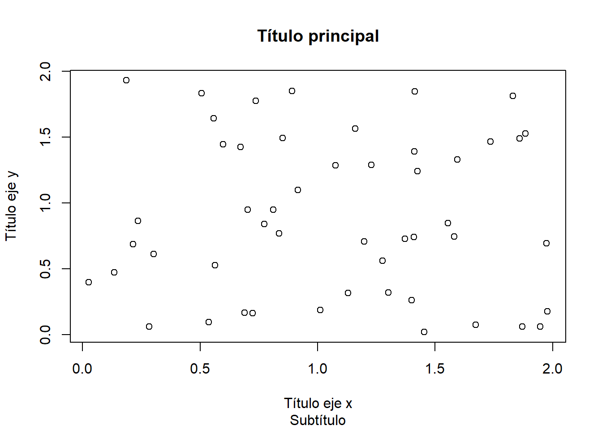
Agregar puntos y líneas
Dentro de la región de la gráfica puedes agregar puntos y líneas.
Estos los especificas en la función plot o los agregas más tarde con points y lines. También puedes agregar texto con
text(0.6,0.6,"Texto en punto (0.6,0.6)")
abline(h = 0.6, v = 0.6)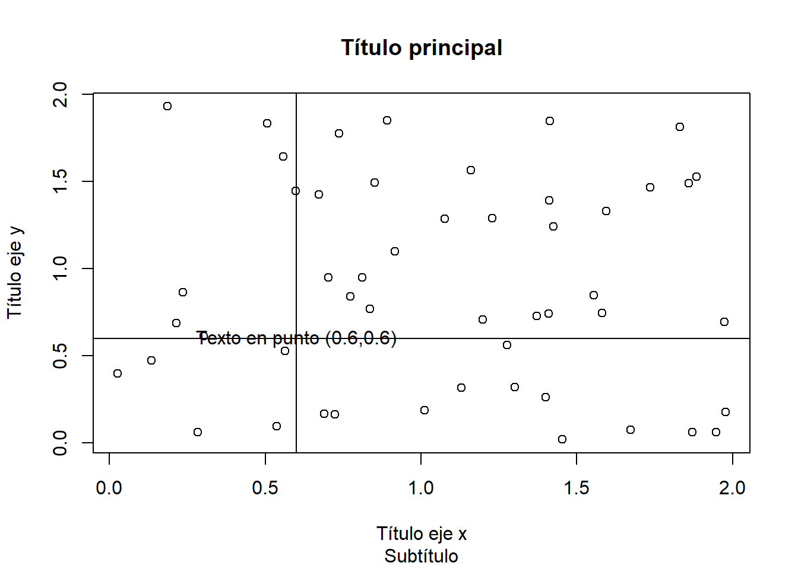
Agregar texto en los márgenes
Puedes agregar texto partiendo de las coordenadas de los márgenes. line = -1 indica una línea dentro de la figura, line = 1, indica una línea dentro de la figura.
for (side in 1:4) mtext(-1:4, side = side, at = .7, line = -1:4)
mtext(paste("side",1:4), side = 1:4, line = -1, font = 2)Usando distintas line puedes agregar muchas líneas de texto en cada lado de la figura.
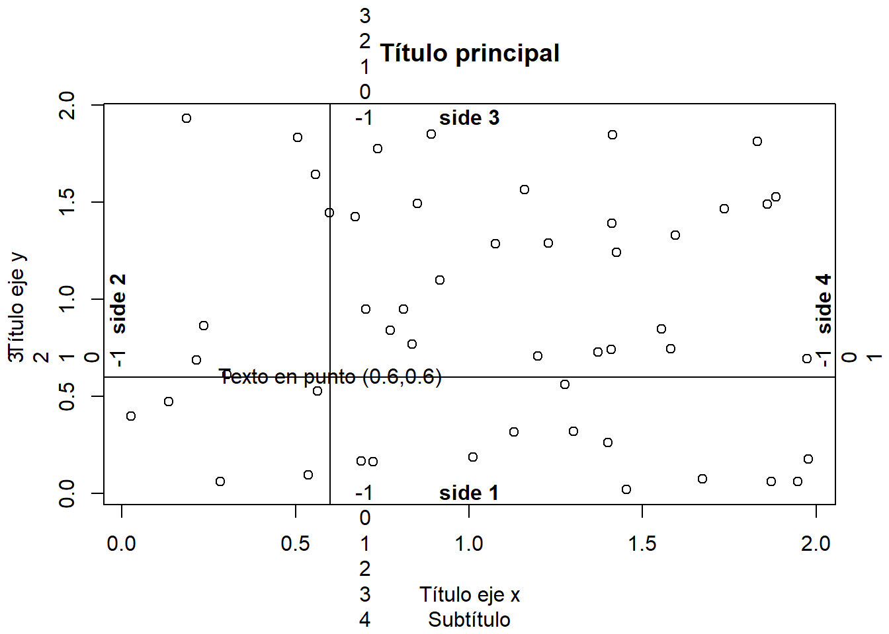
Nota que no todos los márgenes son suficientemente grandes para registrar todos los números, por lo que conviene utilizar posiciones negativas para añadir texto si se desea.
Contruir un gráfico por partes
Para tener más control puedes iniciar un área gráfica en blanco y poco a poco agregar las partes con comandos individuales.
plot(x, y, type = "n", xlab = "", ylab = "", axes = F)
points(x,y) #agrega los puntos de forma individual
axis(1)
axis(2)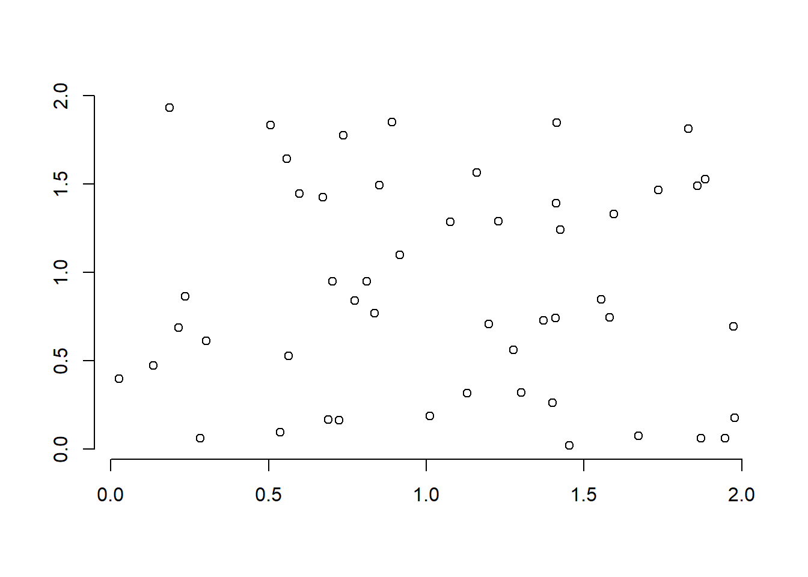
plot(x, y, type = "n", xlab = "", ylab = "", axes = F) #prerapa el área de gráfico.
points(x,y) #agrega los puntos de forma individual
axis(1)
axis(2, at =seq(0.2,1.8,0.2))
box()
title(main = "Título principal", sub = "Subtítulo", xlab = "Eje x", ylab = "Eje y")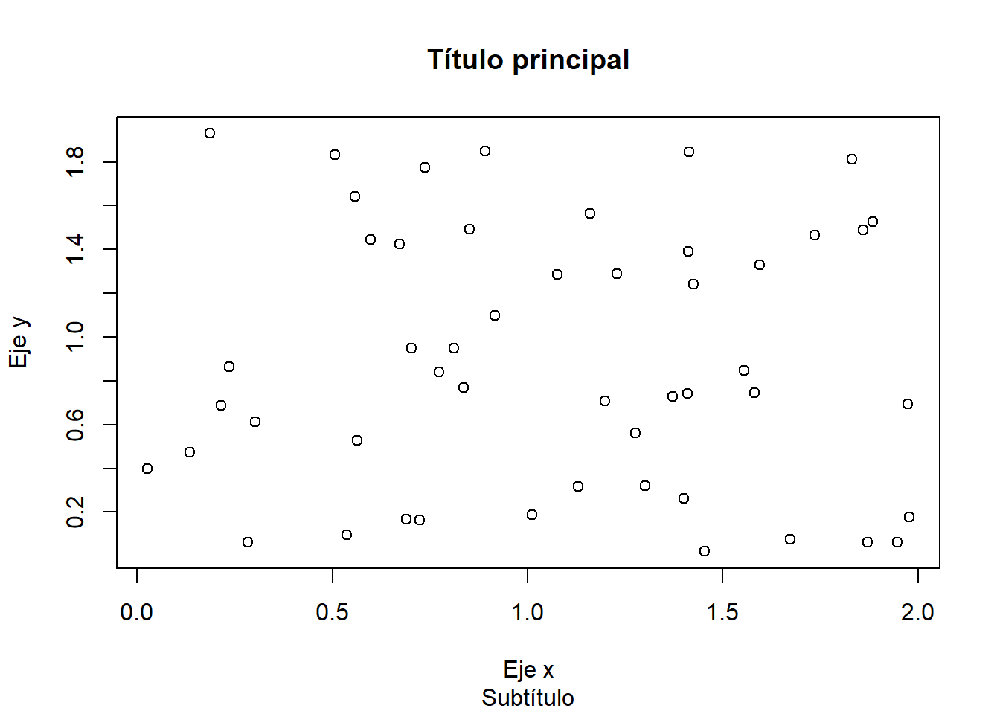
Función par
par es una función que permite modificar el grosor de las líneas, el tamaño de los caracteres y su fuente, colres, estilo de ejes, tamaño de las áreas gráficas y regiones de figuras, etc.
Incluso es posible dividir la figura en varias subfiguras usando mfrow y mfcol.
En este momento explicar todos los parámetros gráficos carece de sentido. En su lugar se explicarán cuando se presenten gráficos específicos.
Combinar figuras
También podemos combinar figuras si así lo deseamos
x <- rnorm(100) #generamos datos distribución normal
hist(x, freq = F) #creamos un histograma de frecuencias relativas haciendo freq = F
curve(dnorm(x), add = T) #agregamos una curva normal al establecer add = TCombinar figuras
Para asegurar que el histograma y la curva tengan espacio suficiente en la figura, modifica la magnitud de los valores de y en los elementos de ambas gráficas.
h <- hist(x, plot = F)
ylim <- range(0, h$density, dnorm(0))
hist(x, freq = F, ylim = ylim)
curve(dnorm(x), add = T)
Al usar en hist el argumento plot = F, hist no despliega nada, pero regresa una estructura que contine las alturas de las barras de las densidades. Esto y el hecho de que el máximo de dnorm(x) es dnorm(0) nor permite calcular el rango que se requiere para los valors de y.
Programación
Descripción del módulo
Objetivos
Es posible escribir tus propias funciones usando R. Esta posibilidad es principalmente importante al utilizar la aplicación en el largo plazo.
En esta sección veremos estudiaremos las estructura de control que dirigen la ejecución de un programa.
Estructuras de control
IF
La construcción if y else permiten ejecutar o saltar un conjunto de instrucciones dentro del código de un programa de R.
aa <- 15
if(aa > 14)
print("FELICIDADES")## [1] "FELICIDADES"if(aa > 14) print("FELICIDADES")## [1] "FELICIDADES"if(aa > 14){
print("PRIMER REGLÓN")
print("SEGUNDO REGLÓN")
}## [1] "PRIMER REGLÓN"
## [1] "SEGUNDO REGLÓN"Puedes usar el valor que regresa if de forma directa
y <- 10
y <- if(aa > 14) 50
y## [1] 50IF-ELSE
La construcción if admite una sóla expresión, pero ésta puede ser la expresión compuesta, que se construye mediante el uso de llaves { } y las expresiones en su interior, separadas ya sea por un cambio de reglón o por ;.
Para agregar más expresiones en distintas condiciones podemos utilizar la construcción else if y else.
if(10 > aa){
print("RANGO MENOR")
} else if(10 <= aa && aa <= 20){
print("RANGO MEDIO")
} else{
print("RANGO ALTO")
}## [1] "RANGO MEDIO"Ciclos
En el lenguaje de programación es común utilizar ciclos o repeticiones. Estas repeticiones implican instrucciones que se repiten un determinado número de veces mientras se cumple una condición.
Ciclo FOR
letras <- c("S", "U", "A", "V", "E")
for (i in 1:5) {
print(letras[i])
}## [1] "S"
## [1] "U"
## [1] "A"
## [1] "V"
## [1] "E"La estructura que sigue el ciclo for es:
for (var in seq) exprDonde la expresión puede ser compuesta utilizando llaves { } como en el ejemplo anterior.
Otras formas de lograr el ciclo for es:
for (i in seq_along(letras)) {
print(letras[i])
}## [1] "S"
## [1] "U"
## [1] "A"
## [1] "V"
## [1] "E"for (letra in letras) {
print(letra)
}## [1] "S"
## [1] "U"
## [1] "A"
## [1] "V"
## [1] "E"La función seq_along() genera una secuencia de enteros de acuerdo al número de elementos del objeto usado como argumento.
En el segundo caso se toma uno a uno los elementos del objeto después de la partícula in del for.
Ciclo WHILE
El ejercicio anterior lo podemos lograr utilizando ciclo condicionados al cumplimiento de una regla con la instrucción while.
i <- 1
while (i <= 5) {
print(letras[i])
i <- i + 1
}## [1] "S"
## [1] "U"
## [1] "A"
## [1] "V"
## [1] "E"La instrucción while sigue la estructura
while (cond) exprDonde la expresión puede se compuesta al utilizar llaves { } como se observó en el ejemplo.
Repeticiones infinitas
La instrucción repeat permite crear ciclos infinitos que no se detienen a menos que agreguemos alguna interrupción como break.
i <- 1
repeat {
print(letras[i])
i <- i + 1
if (i > 5)
break
}## [1] "S"
## [1] "U"
## [1] "A"
## [1] "V"
## [1] "E"Interrupciones del flujo normal de los cilos
Existen funciones como break, next y return que permiten interrumpir los ciclos en el momento en que se ejecutan.
Advertencia Interrumpir ciclos usando funciones como
break,nextyreturnno es recomendado bajo los principios de la programación estructurada.
Debido a que el uso de estas funciones no es recomendado, no profundizaremos en su uso y aplicación.
Escritura de funciones
¿Por qué escribir funciones?
Cuando el código que escribirmos es muy extenso y complejo, utilizar funciones que nos permitan reciclar nuestros códigos y atender las necesidades en módulos separados de forma ordenada.
Estructura formal de una función
Para crear o definir funciones personalizadas se utiliza la directiva function.
f <- function(<argumentos>){
#expresiones
<valor> #la última expresión de la lista
}Esta directiva tiene dos partes:
- Definición de argumentos formales.
- Expresiones.
Al ejecutarse la función el valor de la última expresión en la secuencia de ejecución se entrega como resultado
Ejemplo de funciones: Caso 1
Definimos una función llamada Mifuncion.v1 con argumentos x, yyy, z, y t.
Mifuncion.v1 <- function (x, yyy, z=5, t) {
w <- x + yyy - z
w
}
Mifuncion.v1(x = 1, yyy = 2)## [1] -2x, yyy son argumentos obligatorios. El usuario debe definir su valor al momento de ejecutar la función.
z es un argumento opcional, pues si el usuario no lo define, automáticamente toma el valor de 5.
t es un argumento adicional que no se emplea en el cuerpo de la función y su definición o falta de ella no afecta el resultado.
Observa el efecto que distintas formas de ejecutar tu función tiene en ella y discute.
Mifuncion.v1(x = 1, yyy = 2)
Mifuncion.v1(x = 1, yyy = 2, z = 5)
Mifuncion.v1(x = 1, yyy = 2, z = 7)
Mifuncion.v1(x = 1, yyy = 2, z = 7, t = 10)
Mifuncion.v1(1, 2)
Mifuncion.v1(1, 2, 5)
Mifuncion.v1(1, 2, 7)
Mifuncion.v1(1, 2, 7, 10)
Mifuncion.v1(yyy = 2, z = 7, x = 1)
Mifuncion.v1(2, 7, 1)
a = 1
b = 2
c = 3
Mifuncion.v1(x = a, yyy = b, z = c)
Mifuncion.v1(a, b, c)
Mifuncion.v1(a, b, z = c)Ejemplo de funciones: Caso 2
Ahora veremos que sucede si agregamos la función return dentro de las expresiones que ejecutará la función que definimos
Mifuncion.v2 <- function (x, yyy, z=5, t) {
w <- x + yyy - z
return (w)
3.1416 # Este código nunca se ejecuta
}
Mifuncion.v2(x = 1, yyy = 2)## [1] -2La función detiene su ejecución al llegar a return (w) y regresa como resultado el valor del objeto defino entre paréntesis.
Ejemplo de funciones: Caso 3
Ahora veremos que sucede si el resultado no lo salvas en una variable
Mifuncion.v3 <- function (x, yyy, z=5, t) {
x + yyy - z
}
Mifuncion.v3(x = 1, yyy = 2)## [1] -2La función regresa el valor de la última expresión ejecutada, y obtenemos el mismo resultado en en los casos anteriores.
Variables locales
Si observamos la variable w, esta se define al moento de ejecutar la función.
Mifuncion.v1 <- function (x, yyy, z=5, t) {
w <- x + yyy - z
w
}w nace en la función y desaparece cuando termina de ejecutarse la función. Se dice que w es una varible local.
Variables locales
Haz la siguente prueba y observa el resultado
w <- 9
Mifuncion.v1 <- function (x, yyy, z=5, t) {
w <- x + yyy - z
w
}
Mifuncion.v1(x = 1, yyy = 2)## [1] -2w## [1] 9La ejecución de la función no afectó el valor de w definido fuera de ella.
<- vs =
Usar <- para asignar permite que el código sea compatible con códigos y versiones de R viejas.
Asignar con = es una tendencia moderna, y en general se obtiene el mismo efectos que al usar <-. Sin embargo existen diferencias sutiles.
Observa que sucede con el valor de x al definir su valor dentro de los argumentos de una función:
x = 8
Mifuncion.v1(x = 1, yyy = 2)## [1] -2x## [1] 8Mifuncion.v1(x <- 1, yyy = 2)## [1] -2x## [1] 1Revisión de los argumentos de una función
Para revisar los argumentos de una función, ya sea definida por el usuario por o no, podemos utilizar la función args()
args(Mifuncion.v1)## function (x, yyy, z = 5, t)
## NULLargs(lm)## function (formula, data, subset, weights, na.action, method = "qr",
## model = TRUE, x = FALSE, y = FALSE, qr = TRUE, singular.ok = TRUE,
## contrasts = NULL, offset, ...)
## NULLAquí, el estudio del argumento especial ... está fuera del alcance del curso, sin embargo el usuario debe saber que se usa para transferir un número variable de argumentos.
Entrada de Datos
Descripción del módulo
Objetivos
Los conjuntos de datos no tienen que llegar a ser demasiado grandes para que sea impráctico teclearlos usando c(...). La mayoría de los ejemplos que hemos visto hasta el momento corresponden a bases de datos existentes en el paquete ISwR. Sin embargo, en el momento en que deseamos aplicar estos métodos a nuestros propios datos, tendrás que lidiar con archivos. En esta sección hablaremos sobre cómo leer archivos de datos y como editarlos usando R. Se harán algunas consideraciones para los usuarios de sistemas operativos Windows.
Entrada de datos
Lectura de un archivo de texto
La forma más conveniente de leer datos en R es a través de la función read.table. Se requiere que los datos estén en formato ASCII; esto es, un archivo plano creado con NotePad de Windows o cualquier editor de texto plano. El resultado de usar read.table es un data frame, por lo que la función espera encontrar la disposición de datos correspondiente, donde cada línea en el archivo contiene todos los datos de cada sujeto (o rata, o cliente, o…) en un orden específico, separados por espacios en blanco, u opcionalmente, algún otro separador. La primera línea del archivo contiene el encabezado dando los nombre a las variables, una práctica muy recomendada.
Lee una base de datos
thuesenBD <- read.table("/home//Desktop/thuesenBD.txt", header = T)head(thuesenBD)## blood.glucose short.velocity
## 1 15.3 1.76
## 2 10.8 1.34
## 3 8.1 1.27
## 4 19.5 1.47
## 5 7.2 1.27
## 6 5.3 1.49Recuerda ajustar la ruta del archivo en tu computadora. Descarga el achivo thuesenBD.txt.
Nota sobre Windows
Si usas Windows recuerda usar \\ o / en lugar de \ para separar los directorios.
N:\\documentos\\thuesenBD.txt
N:/documentos/thuesenBD.txtTextos y números
read.table detecta automáticamente si un vector es numérico y texto, y lo convierte a factor en caso de ser texto. R no intenta reconocer códigos numéricos como factores.
head(secretinBD)## gluc person time repl time20plus time.comb
## 1 92 A pre a pre pre
## 2 93 A pre b pre pre
## 3 84 A 20 a 20+ 20
## 4 88 A 20 b 20+ 20
## 5 88 A 30 a 20+ 30+
## 6 90 A 30 b 20+ 30+Descarga el achivo secretinBD.txt.
Textos y números
Leer factores de esta manera es conveniente, pero hay un punto en contra. Los niveles se leen alfabéticamente.
levels(secretinBD$time)## NULLSi esto no es lo que se desea, tendrás que manipular los niveles de los factores.
Archivos delimitados
Las aplicaciones como las hojas de cálculo y bases de datos producen archivos de texto en formatos que requieren que se ajusten múltiples opciones. Para estos propósitos existen variantes de read.table pre-cocinadas. read.csv y read.csv2 permiten leer archivos Csv separados por coma (,) y punto y coma (;) respectivamente. Ambos asumen header=T por defecto. read.delim y read.delim2 ayudan a leer archivos delimitados por tabulaciones. > Recomendación > Usa estas variantes cuando observes que read.table no te da los resultados esperados.
Conversión de datos entrantes
Por defecto read.table convierte tus datos numéricos como numéricos y los no numéricos como factores. Si por alguna razón esto no tiene sentido puedes revisar los argumentos stringAsFactor para modificar todas las columnas, o as.is para hacerlo de forma individual. La opción colClasses permite espicificar cómo deseas que se lea cada columna, como las clases estándar character, numeric, etc. Si no deseas alguna columna usas NULL.
Ejemplo de conversión de datos
Si deseas especificar colClasses en read.csv en un conjunto de datos donde la primera columna ``time’’ es un vector de caracteres mientras que las cinco columnas restantes es numérico:
data <- read.csv("test.csv", comment.char="" ,
colClasses=c("character",rep("numeric",5)),
strip.white=FALSE)Observa que colClasses debe tener el mismo número de elementos que la cantidad de columnas a importar.
Editor de Datos
R ofrece un editor de texto con una intefaz primitiva de hoja de cálculo, pero muy útil en caso de contar con pequeños conjuntos de datos.
aq <- edit(airquality)En este ejemplo, cuando cierras el editor de datos, los datos editados se asignan a la variable aq, mientras que el original airquality permanece intacto.
Editor de Datos
Si no te importa modificar los datos originales puedes usar
fix(aq)Esto es equivalente a usar aq <- edit(aq).
Editor de Datos
Puedes aprovechar el editor para agregar datos manualmente a un dataframe.
dd <- data.frame()
fix(dd)Esto es equivalente a usar aq <- edit(aq).
Interfaz con otros programas
En algunas ocasiones vas a querer extraer datos de otros programas a R.
Por ejemplo, si tienes datos en otros paquetes estadísticos u hojas de cálculo.
Una solución simple a este problema es pedir que el otro programa exporte los datos como un archivo de texto o algún formato compatible con read.table, read.csv, read.csv2, read.delim o read.delim2.
Paquete foreign
El paquete foreign es generalmente etiquetado como ``recomendado’’.
Permite leer archivos de Spss (formato .sav), Sas (librerías de exportación), Epi-info (.rec), Stata, Systat, Minitab, y S-plus.
Leer del Clipboard
Una manera rápida de leer datos es usando el Clipboard.
Por ejemplo
read.table("clipboard", header = T)Esto requiere cierta atención, pues se puede perder la precisión ya que sólo se transfieren los datos que aparecen en pantalla, lo que puede ser un problema si tienes muchos dígitos de significancia.
Una nota para usuarios avanzados
Para información guardada en bases de datos existe un número de paquetes en el CRAN.
En particular el paquete RODBC te permite configurar una conección ODBC (Open Database Connectivity) para aplicaciones comunes como Excel y Access.
Para información más actualizada y amplia visita el manual R Data Import/Export en el CRAN.
Tareas
Ejercicios
Describe como insertar un valor entre dos elementos de un vector en una posición dada usando la función
append. Usa la ayuda del sistema para averiguarlo. ¿Sinappendcómo lo harías?Escribe la base de datos
thuesenen un archivo de texto separado por tabulaciones usandowrite.table. Revisa la base de datos usando un editor de texto. Cambia los valoresNAa.(punto), y lee el archivo modificado de regreso enRcon un comando apropiado. También intenta importar los datos de otras aplicaciones de tu elección y expórtalas a un nuevo archivo luego de editarlas. Es posible que tengas que remover los nombres de las columnas para que esto funcione.
Ejercicio 1: solución
?append
x <- c(1,2,3,4,5,6,7) #creamos un vector de prueba
append(x,c(8,9,10),after = length(x)) #agregamos datos al final del vector
append(x,c(8,9,10),after = 4) #agregamos datos después de la cuarta posición
c(x,c(8,9,10)) #agregamos datos al final del vector x
c(x[1:4],c(8,9,10),x[5:7]) #agregamos datos después de la cuarta posiciónEjercicio 2: solución
?write.table
write.table(thuesen, file = "Datos.txt", quote = TRUE, sep = "\t",
na = "NA", row.names = F,
col.names = TRUE,
fileEncoding = "")
#despues de cambiar NA por .
thuesenBD2 <- read.table("Datos.txt", header = TRUE,
sep = "\t", na.strings = ".")# Lee la primera hoja de un documento en miexcel.xlsx
# La primera fila contiene el nombre de las variables
library(xlsx)
mydata <- read.xlsx("c:/miexcel.xlsx", 1)
# Lee en la hoja con el nombre mihoja
mydata <- read.xlsx("c:/miexcel.xlsx", sheetName = "mihoja")Análisis Descriptivo I
Descripción del módulo
Objetivos
Antes de intentar modelar datos, o hacer inferencias sobre los mismos, lo más sano es explorarlos a través de resúmenes estadísticos y visualizarlos por medio de gráficas diseñadas para ese fin.
A través de ejemplos estaremos explorando algunas estrategias comunes en el análisis de datos.
Resúmenes estadísticos
Estadísticos simples
Para calcular la media, desviación estándar, varianza y mediana:
x <- rnorm(50)
mean(x)## [1] 0.00665102sd(x)## [1] 1.112652var(x)## [1] 1.237994median(x)## [1] 0.03025127Más Cuantiles
Cuantiles empíricos se pueden calcular también
quantile(x)## 0% 25% 50% 75% 100%
## -2.45798891 -0.68522589 0.03025127 0.77841802 1.83515444Cuantiles empíricos se pueden calcular también
pvec <- seq(0,1,0.1)
pvec## [1] 0.0 0.1 0.2 0.3 0.4 0.5 0.6 0.7 0.8 0.9 1.0quantile(x,pvec)## 0% 10% 20% 30% 40% 50%
## -2.45798891 -1.52443743 -1.05284459 -0.54157438 -0.37944706 0.03025127
## 60% 70% 80% 90% 100%
## 0.49506829 0.69536203 1.01068608 1.53582229 1.83515444Por defecto R usa interpolación. Existen 7 métodos para calcular cuantiles que se pueden acceder mediante el argumento type
Datos faltantes
Usa los argumentos de las funciones para lidear con datos faltantes.
attach(juul)
mean(igf1)## [1] NA#Le pedimos a la función ignorar los datos faltantes
mean(igf1,na.rm = T)## [1] 340.168Contar elementos cuando hay datos faltantes
La función length no entiende la instrucción na.rm, por lo que no se puede usar para contar la cantidad de datos no faltantes. Para ello se puede usar algo como:
sum(!is.na(igf1))## [1] 1018Los valores TRUE se traducen como 1 y los FALSE como 0. al momento de sumarlos.
Resumen de estadísticos
Una resumen de estadísticos de las variables numéricas se puede obtener mediante la función summary.
summary(igf1)## Min. 1st Qu. Median Mean 3rd Qu. Max. NA's
## 25.0 202.2 313.5 340.2 462.8 915.0 321Resumen de estadísticos
También puedes obtener una descripción de todo el data frame.
summary(juul)## age menarche sex igf1
## Min. : 0.170 Min. :1.000 Min. :1.000 Min. : 25.0
## 1st Qu.: 9.053 1st Qu.:1.000 1st Qu.:1.000 1st Qu.:202.2
## Median :12.560 Median :1.000 Median :2.000 Median :313.5
## Mean :15.095 Mean :1.476 Mean :1.534 Mean :340.2
## 3rd Qu.:16.855 3rd Qu.:2.000 3rd Qu.:2.000 3rd Qu.:462.8
## Max. :83.000 Max. :2.000 Max. :2.000 Max. :915.0
## NA's :5 NA's :635 NA's :5 NA's :321
## tanner testvol
## Min. :1.00 Min. : 1.000
## 1st Qu.:1.00 1st Qu.: 1.000
## Median :2.00 Median : 3.000
## Mean :2.64 Mean : 7.896
## 3rd Qu.:5.00 3rd Qu.:15.000
## Max. :5.00 Max. :30.000
## NA's :240 NA's :859Aquí menarche, sex y tanner están codificadas como numéricas cuando en realidad son categóricas. Podemos corregir esto:
detach(juul)
juul$sex <- factor(juul$sex, labels = c("M","F"))
juul$menarche <- factor(juul$menarche, labels = c("No","Yes"))
juul$tanner <- factor(juul$tanner, labels = c("I", "II", "III", "IV", "V"))
attach(juul)
summary(juul)## age menarche sex igf1 tanner
## Min. : 0.170 No :369 M :621 Min. : 25.0 I :515
## 1st Qu.: 9.053 Yes :335 F :713 1st Qu.:202.2 II :103
## Median :12.560 NA's:635 NA's: 5 Median :313.5 III : 72
## Mean :15.095 Mean :340.2 IV : 81
## 3rd Qu.:16.855 3rd Qu.:462.8 V :328
## Max. :83.000 Max. :915.0 NA's:240
## NA's :5 NA's :321
## testvol
## Min. : 1.000
## 1st Qu.: 1.000
## Median : 3.000
## Mean : 7.896
## 3rd Qu.:15.000
## Max. :30.000
## NA's :859Nota como cambia la presentación de los datos categóricos.
Las modificaciones al data frame no afectan la versión adjunta con attach, por eso del detach usado.
Función transform o within
Para ajustar varias variables dentro de un data frame puedes usar:
juul <- transform(juul,
sex = factor(sex, labels = c("M","F")),
menarche = factor(menarche, labels = c("No","Yes")),
tanner = factor(tanner, labels = c("I", "II", "III", "IV", "V")))Recuerda usar comas para separar cada modificación.
Gráficas
Histogramas
Puedes crear histogramas con la función hist()
x = rnorm(1000)
hist(x)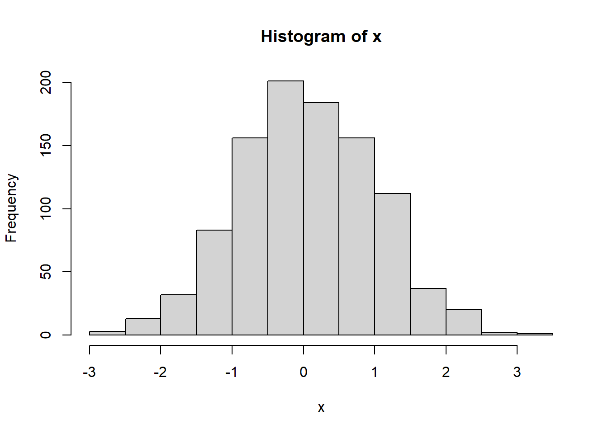
Controla el número de clases con breaks = n.
hist(x, breaks = 5)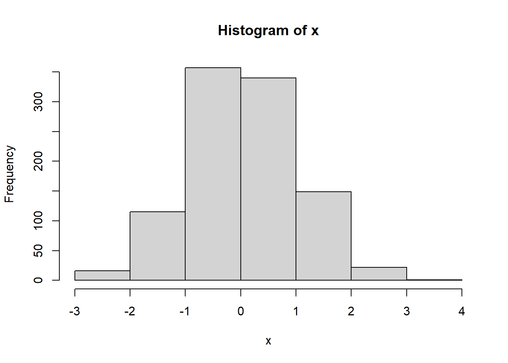
Histogramas
También puedes especificar los límites de los intervalos de clase con el mismo argumento breaks al definirlo como vector.
Usemos como ejemplo los datos de accidentes por grupo de edad documentados por Altman (1991):
mid.age <- c(2.5,7.5,13,16.5,17.5,19,22.5,44.5,70.5)
acc.count <- c(28,46,58,20,31,64,149,316,103)
age.acc <- rep(mid.age,acc.count)
brk <- c(0,5,10,16,17,18,20,25,60,80)
hist(age.acc,breaks = brk)Nota que automáticamente el histograma corrige el área de la columna para hacerla proporcional a la cantidad de elementos en ella.
Distribución acumulada empírica
La distribución acumulada se define como la fracción de datos menores o iguales a \(x\). Esto es, si \(x\) es la \(k\)-ésima observación más pequeña, la proporción \(k/n\) de los datos son menores o iguales a \(x\). Así, la distriución empírica puede ser graficada como
n <- length(x)
plot(sort(x), (1:n)/n, xlab="x",
ylab="Proporción", type = "s", ylim = c(0,1))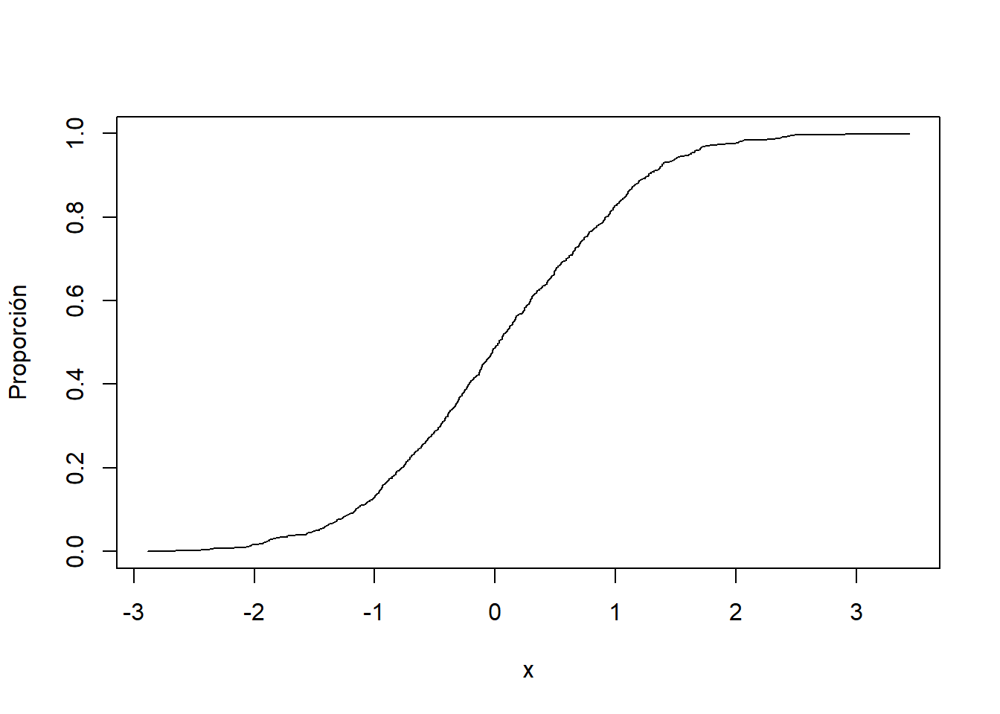
Usar type = "s" crea una función escalonada.
Graficas Cuantil-Cuantil
Una de las razones para construir la distribución empírica acumulada es para verificar si los datos siguen una distribución normal. Para una mejor evaluación de este hecho podemos ocupar las gráficas cuantil-cuantil
qqnorm(x)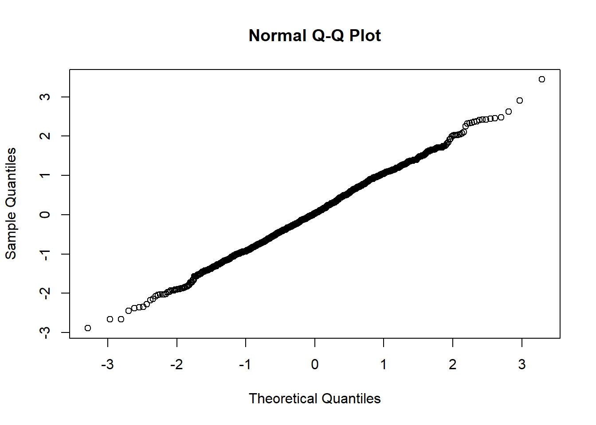
Si los datos siguen una distribución normal, las gráfica cuantil-cuantil deberá mostrar aproximadamente una línea recta.
Gráfica de cajas
Una gráfica de cajas, o gráfica de cajas y bigotes, brinda una visión de los datos y permite su rápida comparación. Además, nos ayuda a detectar si existen puntos atípicos en las observaciones que puedan requerir atención especial.
par(mfrow=c(1,2))
boxplot(IgM)
boxplot(log(IgM))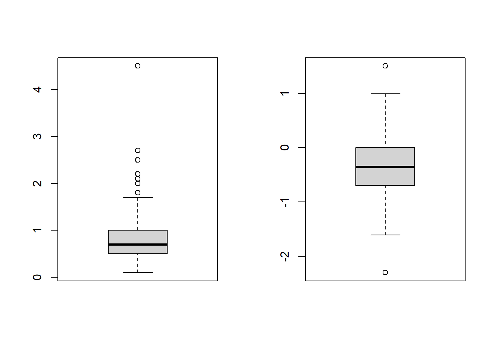
par(mfrow=c(1,1))La función par() permite controlar los parámetros globales del ambiente gráfico. Uno de estos parámetros globales es mfrow, que se lee multiframe, rowwise. c(1,2) define una fila con dos columnas para acomodar figuras.
Nota sobre la función par La función par afecta los parámetros de maner global, por lo que es necesario indicarle a
Rque luego de crear la figura regrese los parámetros a su estado por defecto.
En el ejemplo anterior. Después de crear dos figuras en una misma área tuvimos que ejecutar nuevamente el comando par(mfrow=c(1,1)) para reestablecer la configuración inicial (a menos que desees mantenerla para siguientes gráficas).
Resúmenes estadísticos por grupo
- Estadísticas por grupos Cuando se trabaja con datos agrupados, es muy común querer obtener resúmenes estadísticos de los mismos dentro de cada grupo.
Por ejemplo, una tabla de medias y desviaciones estándar.
Para este fin usaremos apply.
- Medias
tapply(folate,ventilation,mean)- Desviaciones
tapply(folate,ventilation,sd)- Conteos
tapply(folate,ventilation,length)- Junta varios resultados} Si quieres que se vea más bonito prueba lo siguiente:
cbind(media = xbar, desv.est = s, n = n)- Valores faltantes Si tienes valores faltantes por defecto no se analizan
attach(juul)## The following objects are masked from juul (pos = 3):
##
## age, igf1, menarche, sex, tanner, testvoltapply(igf1,tanner,mean)## I II III IV V
## NA NA NA NA NAModifica el argumento na.rm=T
tapply(igf1,tanner,mean, na.rm=T)## I II III IV V
## 207.4727 352.6714 483.2222 513.0172 465.3344Otras opciones: aggregate
aggregate y by son variaciones de lo mismo ya visto, salvo que el primero funciona para todo el data frame y presenta los resultados en un data frame.
Muy útil para presentar varios resultados a la vez.
aggregate(juul[c("age","igf1")],
list(sex=juul$sex), mean, na.rm=T)## sex age igf1
## 1 M 15.38436 310.8866
## 2 F 14.84363 368.1006Nota que el argumento que agrupa debe estar contenido en una lista siempre.
La variable índice no necesariamente forma parte del data frame evaluado, por lo que hay que incluir toda su ruta como juul$sex.
En este caso, puesto que un data frame es en realidad una lista:
aggregate(juul[c("age","igf1")],juul["sex"], mean, na.rm=T)## sex age igf1
## 1 M 15.38436 310.8866
## 2 F 14.84363 368.1006El truco está en que el indice, al estar entre corchetes, regresa un data frame.
Otras opciones: by
Puedes hacer los mismo con la función by
by(juul$age, juul["sex"], mean, na.rm=T)## sex: M
## [1] 15.38436
## ------------------------------------------------------------
## sex: F
## [1] 14.84363Si quieres un resumen de todas las variables
by(juul, juul["sex"], summary)## sex: M
## age menarche sex igf1 tanner testvol
## Min. : 0.17 No : 0 M:621 Min. : 29.0 I :291 Min. : 1.000
## 1st Qu.: 8.85 Yes : 0 F: 0 1st Qu.:176.0 II : 55 1st Qu.: 1.000
## Median :12.38 NA's:621 Median :280.0 III : 34 Median : 3.000
## Mean :15.38 Mean :310.9 IV : 41 Mean : 7.896
## 3rd Qu.:16.77 3rd Qu.:430.2 V :124 3rd Qu.:15.000
## Max. :83.00 Max. :915.0 NA's: 76 Max. :30.000
## NA's :145 NA's :141
## ------------------------------------------------------------
## sex: F
## age menarche sex igf1 tanner testvol
## Min. : 0.25 No :369 M: 0 Min. : 25.0 I :224 Min. : NA
## 1st Qu.: 9.30 Yes :335 F:713 1st Qu.:233.0 II : 48 1st Qu.: NA
## Median :12.80 NA's: 9 Median :352.0 III : 38 Median : NA
## Mean :14.84 Mean :368.1 IV : 40 Mean :NaN
## 3rd Qu.:16.93 3rd Qu.:483.0 V :204 3rd Qu.: NA
## Max. :75.12 Max. :914.0 NA's:159 Max. : NA
## NA's :176 NA's :713Cuyo resultado ahora es en forma de lista.
Gráficas para datos agrupados
Histogramas
Veamos algunos ejemplos. Primero adjuntemos los datos del data frame energy.
attach(energy)
expend.lean <- expend[stature == "lean"]
expend.obese <- expend[stature == "obese"]Ahora hagamos histogramas.
par(mfrow = c(2,1))
hist(expend.lean, breaks = 10, xlim = c(5,13),
ylim = c(0,4), col = "white")
hist(expend.obese, breaks = 10, xlim = c(5,13),
ylim = c(0,4), col = "grey")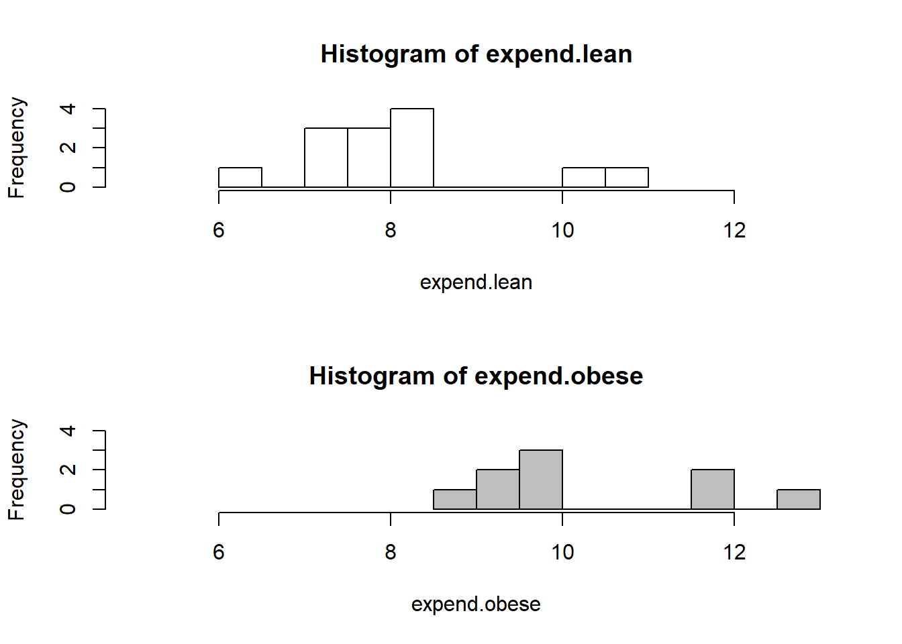
par(mfrow =c(1,1))Gráficas de caja paralelas
Usa el comando
boxplot(expend ~ stature, col = c("red", "blue"))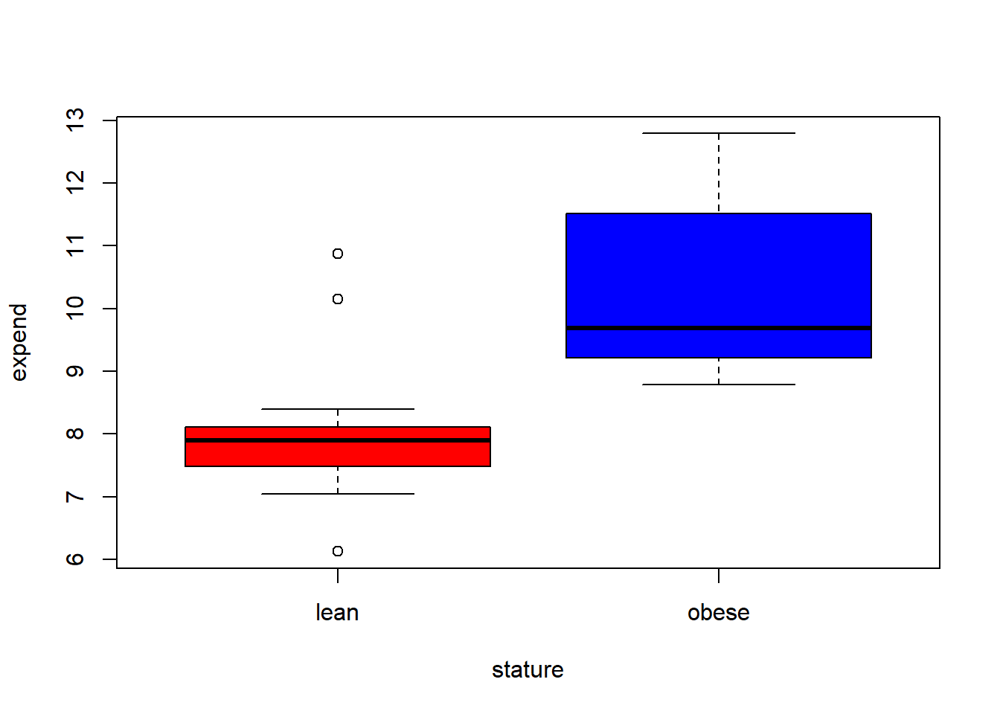
También pudimos haber creado el diagrama con el comando boxplot(expend.lean, expend.obese).
Diagrama de puntos
Cuando se tienen pocos datos, como en el ejemplo anterior, el cálculo del intervalo intercuartílico (largo de la caja) es poco preciso y nuestros gráficos pueden sufrir del efecto del .
Cuando tenemos pocos datos puede ser más conveniente utilizar un diagrama de observaciones individuales donde cada observación es graficada como un punto en el eje.
Para lograr esto usamos la función stripchart.
Diagrama de observaciones individuales
opar <- par(mfrow = c(2,2), mex=0.6, mar=c(3,3,2,1)+0.1)
stripchart(expend ~ stature)
stripchart(expend ~ stature, method = "stack")
stripchart(expend ~ stature, method = "jitter")
stripchart(expend ~ stature, method = "jitter", jitter=0.03)par(opar)Algunas observaciones sobre la función
par* La configuración original de par se guarda en una variable (opar). * La configuración original se reestablece conpar(opar)* El argumentomexreduce la distancia entre líneas. *marreduce el número de líneas que rodean la región de la gráfica.
Algunas observaciones sobre los argumentos de
stripchart* La versión por defecto gráfica los puntos sobre la línea, que puede ser problemático si hay traslapes. * El argumentomethod="stack"apila las observaciones iguales. Lo que puede ser todavía un problema con las casi iguales. *method="jitter"crea una pequeña perturbación aleatoria que separa los puntos en un eje imaginario. * Por defectojitterestá definido en0.1, lo que puede ser mucha perturbación para algunos. Usarjitter = 0.03permite ajustar esto a valores menores.
Análisis Descriptivo II
Descripción del módulo
Objetivos
Los datos categóricos usualmente se describen en forma de tablas.
En esta sección se presentan algunas estrategias para crearlas a partir de tus datos y algunas gráficas comunes para su visualización.
Tablas
Generación de tablas
Lideamos principalmente con tablas de dos dimensiones.
Estas pueden ser creadas a partir de una matriz.
De Altman (1991):
caff.marital <- matrix(c(652, 1537, 598, 242, 36, 46, 38,
21, 218, 327, 106, 67),
nrow = 3, byrow = T)
caff.marital## [,1] [,2] [,3] [,4]
## [1,] 652 1537 598 242
## [2,] 36 46 38 21
## [3,] 218 327 106 67Para hacer la tabla es necesario definir los nombre a las columnas y los reglones
colnames(caff.marital) <- c("0", "1-150", "151-300", ">300")
rownames(caff.marital) <- c("Casados", "Divorciados", "Solteros")
caff.marital## 0 1-150 151-300 >300
## Casados 652 1537 598 242
## Divorciados 36 46 38 21
## Solteros 218 327 106 67También puedes renombrar las dimensiones de la matriz.
caff.marital## 0 1-150 151-300 >300
## Casados 652 1537 598 242
## Divorciados 36 46 38 21
## Solteros 218 327 106 67Clase table
Las tablas no son completamente equivalentes a matrices. En R existe una clase llamada table que puedes acceder por medio de as.table().
table.caff.marital <- as.table(caff.marital)
table.caff.marital## 0 1-150 151-300 >300
## Casados 652 1537 598 242
## Divorciados 36 46 38 21
## Solteros 218 327 106 67Si no requieres hacer nada elaborado, usar matrices o usar tablas te darán el mismo resultado, como se observa en el ejemplo.
Tener un objeto de clase table es útil cuando deseamos hacer algo más elaborado, como convertir una tabla en un data frame.
as.data.frame(table.caff.marital)## Var1 Var2 Freq
## 1 Casados 0 652
## 2 Divorciados 0 36
## 3 Solteros 0 218
## 4 Casados 1-150 1537
## 5 Divorciados 1-150 46
## 6 Solteros 1-150 327
## 7 Casados 151-300 598
## 8 Divorciados 151-300 38
## 9 Solteros 151-300 106
## 10 Casados >300 242
## 11 Divorciados >300 21
## 12 Solteros >300 67Crear tablas a partir de data frames
Recordemos el ajuste que hicimos al data frame juul.
juul <- transform(juul,
sex = factor(sex, labels = c("M","F")),
menarche = factor(menarche, labels = c("No","Yes")),
tanner = factor(tanner, labels = c("I", "II", "III",
"IV", "V")))Creamos ahora algunas tablas con la función table().
table(juul$sex)##
## M F
## 621 713Algunos otros ejemplos
table(juul$sex, juul$menarche)##
## No Yes
## M 0 0
## F 369 335table(juul$menarche, juul$tanner)##
## I II III IV V
## No 221 43 32 14 2
## Yes 1 1 5 26 202Más de dos dimensiones
Si queremos una tabla con más de dos dimensiones
table(juul$menarche, juul$tanner, juul$sex)## , , = M
##
##
## I II III IV V
## No 0 0 0 0 0
## Yes 0 0 0 0 0
##
## , , = F
##
##
## I II III IV V
## No 221 43 32 14 2
## Yes 1 1 5 26 202La función table() sigue funcionando, pero el resultado es poco estético
Función xtabs
Podemos intentarlo con la función xtabs:
xtabs(~ tanner + sex, data =juul)## sex
## tanner M F
## I 291 224
## II 55 48
## III 34 38
## IV 41 40
## V 124 204La ventaja es que podemos nombrar las variables dentro del data frame sin tener que utilizar $.
Si son más de dos dimensiones:
xtabs(~ menarche + tanner + sex, data =juul)## , , sex = M
##
## tanner
## menarche I II III IV V
## No 0 0 0 0 0
## Yes 0 0 0 0 0
##
## , , sex = F
##
## tanner
## menarche I II III IV V
## No 221 43 32 14 2
## Yes 1 1 5 26 202Seguimos teniendo resultados poco estéticos.
Función ftable
Ahora tratamos con la función ftable:
ftable(tanner~menarche + sex, data =juul)## tanner I II III IV V
## menarche sex
## No M 0 0 0 0 0
## F 221 43 32 14 2
## Yes M 0 0 0 0 0
## F 1 1 5 26 202El resultado es mucho más estético.
Transponer una tabla
Para transponer una tabla usamos el mismo comando t() que usamos para transponer matrices.
table.caff.marital## 0 1-150 151-300 >300
## Casados 652 1537 598 242
## Divorciados 36 46 38 21
## Solteros 218 327 106 67t(table.caff.marital)## Casados Divorciados Solteros
## 0 652 36 218
## 1-150 1537 46 327
## 151-300 598 38 106
## >300 242 21 67Tablas marginales y frecuencias relativas
Tablas marginales
En ocasiones es deseable obtener los valores marginales de las tablas, esto es, las sumas de los conteos sobre una u otra dimensión en la tabla algo similar a lo que se obtiene en MS Excel con la opción de subtotales, pero restringidoa conteos.
Esto se puede lograr con la opción apply, sin embargo, existe una función todavía más simplificada llamada margin.table.
Función margin.table
Del paquete ISwR creamos una tabla con el data frame juul. Revisa si el data frame lo tienes adjunto a la ruta de búsqueda de R con search(). Para adjuntarlo ejecuta el comando attach(juul), para retirarlo de la ruta usa detach(juul)
tanner.sex <- table(tanner,sex)
tanner.sex## sex
## tanner M F
## I 291 224
## II 55 48
## III 34 38
## IV 41 40
## V 124 204Función margin.table
Ahora obtén los conteos marginales de la tabla usando margin.table().
margin.table(tanner.sex,1)## tanner
## I II III IV V
## 515 103 72 81 328margin.table(tanner.sex,2)## sex
## M F
## 545 554El 1 indica los reglones y el 2 las columnas.
Frecuencias relativas
Obtén las frecuencias relativas mediante prop.table().
prop.table(tanner.sex, margin = 1)## sex
## tanner M F
## I 0.5650485 0.4349515
## II 0.5339806 0.4660194
## III 0.4722222 0.5277778
## IV 0.5061728 0.4938272
## V 0.3780488 0.6219512El 1 indica los reglones y el 2 las columnas.
Si deseas los porcentajes, sólo multiplica la tabla por 100.
La función prop.table() no puede darte las frecuencias relativas al gran total. Si esto es lo que deseas siempre puedes dividir la tabla entre el gran total.
tanner.sex / sum(tanner.sex)## sex
## tanner M F
## I 0.26478617 0.20382166
## II 0.05004550 0.04367607
## III 0.03093722 0.03457689
## IV 0.03730664 0.03639672
## V 0.11282985 0.18562329Resúmenes gráficos para tablas
Gráficas de barras
Al momento de hacer presentaciones, puede ser preferible utilizar una gráfica a presentar un grupo de totales y proporciones.
total.caff <- margin.table(table.caff.marital, 2)
total.caff## 0 1-150 151-300 >300
## 906 1910 742 330barplot(total.caff, col = "green")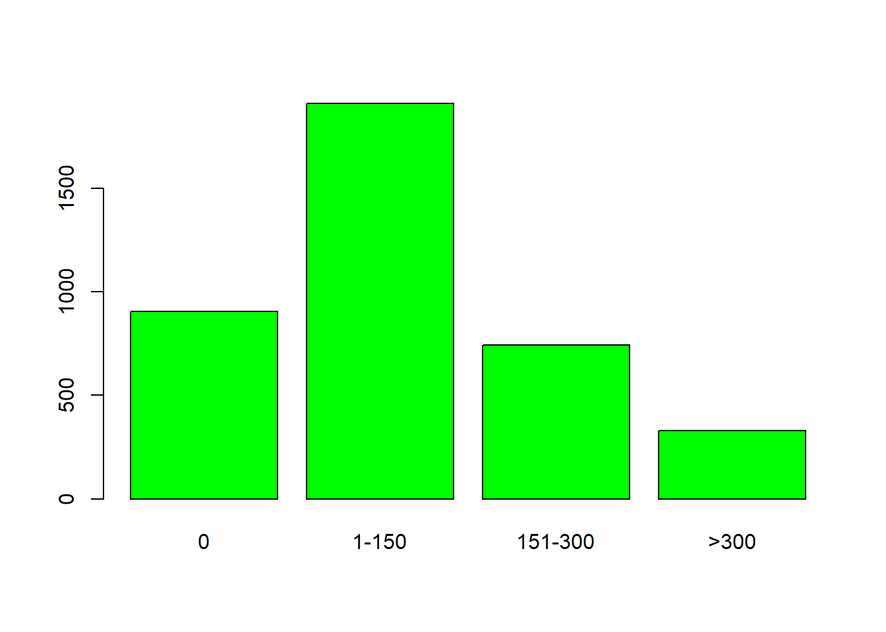
Al momento de hacer presentaciones, puede ser preferible utilizar una gráfica a presentar un grupo de totales y proporciones.
total.caff <- margin.table(table.caff.marital, 2)
total.caff## 0 1-150 151-300 >300
## 906 1910 742 330barplot(total.caff, col = "green", ylim = c(0,2000))
Aquí, ylim = c(0,2000) es el rango a utilizar en el eje de las ordenadas.
La función barplot también te acepta la tabla completa.
barplot(table.caff.marital,
col = c("red","green","blue"),
legend.text = c("casados", "divorciados", "solteros"))Si deseas graficar las dos dimensiones de una tabla pero no deseas que estén agrupadas dentre de una sóla barra, puedes utilizar el argumento beside = T para este fin.
Mira las distintas opciones que puedes utilizar para crear tu gráfica de barras.
par(mfrow = c(2,2))
barplot(caff.marital, col="white")
barplot(t(caff.marital), col = "white")
barplot(t(caff.marital), col = "white", beside = T)
barplot(prop.table(t(caff.marital),2), col="white", beside = T)par(mfrow = c(1,1))Gráfica de barras
Una idea para que tu gráfica se vea mejor
barplot(prop.table(t(table.caff.marital),2),beside = T,
legend.text = colnames(table.caff.marital),
col = c("white", "grey80", "grey50", "black"))R no tiene una forma de encontrar la mejor posición para la leyenda y en ocasiones esta se sobrepondrá sobre tu gráfica.
Para tener un mayor control puedes usar la función legend.
Con el ratón puedes hacer cick en la gráfica generada y obtener coordenadas para la leyenda usando la función locator.
Estas funciones están fuera del alcance del curso, sin embargo, se motiva a los usuarios avanzados que las investiguen para su uso.
Diagrama de puntos de Cleveland
El diagrama de puntos de Cleveland es nombrado a partir de William S. Cleveland (1994) está formulado con la misma información de una gráfica de barras pero ofrece una impresión visual muy diferente. Para ejecutarlo usar
dotchart(t(table.caff.marital), lcolor = "black")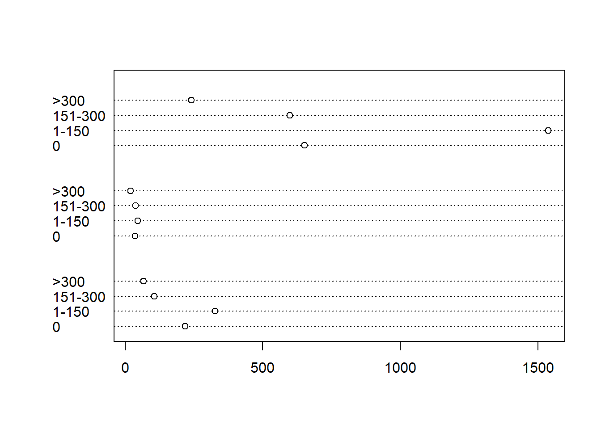
Diagramas de pastel
Veamos como se ven los datos de consumo de cafeína contra el estatus marital
slices <- c("white", "grey80", "grey50", "black")
pie(table.caff.marital["Casados",], main="Casados", col=slices)pie(table.caff.marital["Divorciados",], main="Divorciados", col=slices)pie(table.caff.marital["Solteros",], main="Solteros", col=slices)par(opar)Ejercicios
Explore distintas formas de gráficas de lineas y puntos. Cambie el tipo de línea, el grosor de la línea y el color.
Al graficar
plot(rnorm(10), type = "o")las líneas son visibles dentro de los símbolos dibujados. ¿Cómo puedes evitar esto?Crea un histograma de los datos
react. Debido al alto grado de discretización de los datos, el histograma estará sesgado. ¿Por qué? Puedes utilizar la funcióntruehist()del paqueteMASScomo reemplazo.
Soluciones
- Este es un ejemplo.
plot(rnorm(10), type = "b", col="blue", pch=1, lwd=2)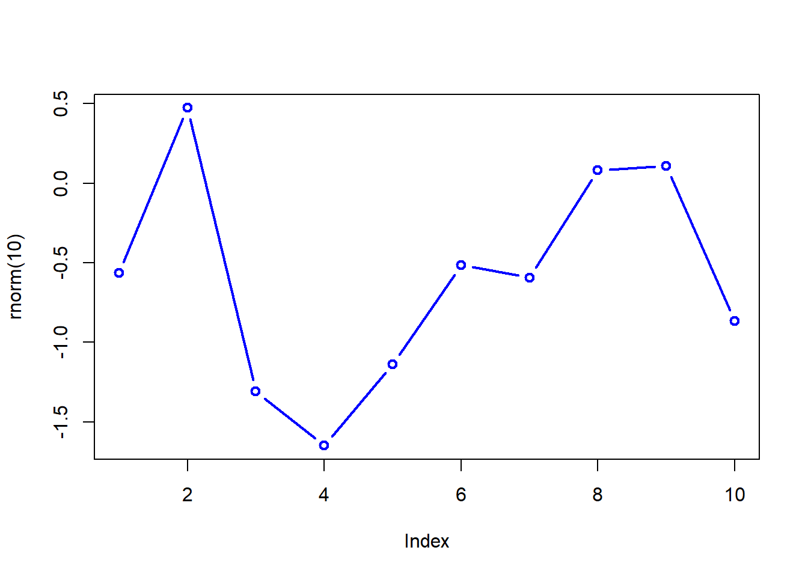
- Podemos cambiar el símbolo dibujado por uno sólido.
plot(rnorm(10), type = "o", col="black", pch=19)hist(react)library(MASS)##
## Attaching package: 'MASS'## The following object is masked from 'juul':
##
## menarchetruehist(react)Otros Tópicos
Descripción del módulo
Objetivos
A continuación se presentan algunos tópicos que pueden ser de interés para usuarios avanzados en R. El detalle del conocimiento de estos tópicos va más allá de la funcionalidad base de R o requiere de estudios previos en estadística.
Los tópicos mostrados a continuación son:
data.tabledplyr- Pronósticos
La presentación de cada tópico es introductoria, y su fin es el de ofrecer una guía a usuario avanzados que deseen profundizar en el uso de R.
Data Tables
Cuando se manipulan datos es común querer obtener subconjuntos, agrupar, actualizar, o incluso unir distintos conjuntos en un solo.
data.tables ofrece una estructura que permite mantener estos comandos de forma concisa y consistente.
Reduces la necesidad de utilizar funciones externas que te ayuden a hacer el análisis.*
Reducir los tiempos de procesamiento al utilizar comandos optimizados.
Lee archivos de datos
Puedes usar la función fast file reader fread de data.table
secretinBD <- fread("secretinBD.txt")El archivo secretinBD.txt se encuentra entre tus archivos de la clase. Descárgalo y léelo usando la función anterior.
La función fread acepta http y https de forma directa.
Lee archivos de datos
Para saber cuantos reglones y columnas tiene tu archivo usa
dim(secretinBD)Crea un data table
Puedes crear tu propio data table usando la función data.table
library(data.table)## Warning: package 'data.table' was built under R version 4.0.2DT = data.table(ID = c("b","b","b","a","a","c"),
a = 1:6,
b = 7:12,
c = 13:18)
DT## ID a b c
## 1: b 1 7 13
## 2: b 2 8 14
## 3: b 3 9 15
## 4: a 4 10 16
## 5: a 5 11 17
## 6: c 6 12 18También puedes utilizar el comando as.data.table para convertir un objeto existente.
Características
A diferencia de data.frames, data.table nunca convierte una columna de caracteres en factores por defecto.
Los número de las filas se imprimen con : para mejorar la visualización.
Cuando la cantidad de filas a imprimir excede el parámetro global (por defectos es 100) sólo se imprimen los primeros cinco y los últimos cinco reglones.
El parámetro global se accede por medio de datatable.print.nrows:
getOption("datatable.print.nrows")## [1] 100Nuevas características
A diferencia de un data.frame, por medio de data.table puedes filtrar, seleccionar y agrupar de forma nativa y eficiente.
Para este fin se sigue la sintaxis DT[i,j,by], que en voz alta se lee algo así: Toma DT, filtra las filas usando i, luego selecciona j, agrupando por by.
Filtrando filas
Siguendo la sintaxis de data.table.
secretinBD[gluc > 85 & person == "A"]Ordenamientos
Podemos ordenar los datos más rápidamente que en un data frame usando la función order. A continuación ordenamos los datos de secretinBD por person en forma ascendente y por gluc en forma descendente y presentamos los primeros resultados.
head(secretinBD[order(person, -gluc)])Seleccionando columnas
Sólo tienes que indicar el nombre sin comillas.
head(secretinBD[,gluc]) #salida es un arreglohead(secretinBD[,list(gluc)]) #salida es un data tableAplica una función a las filas según clasificación
A continuación se muestra como obtener el promedio de gluc según la persona.
secretinBD[,list(Promedio = mean(gluc)), list(person)]Contar filas según clasificación
A continuación se muestra como obtener el total de filas según la persona.
secretinBD[,list(.N), list(person)]R reconoce el símbolo especial .N que indica el número de observaciones en el grupo actual.
Para más información
Para más información visita el documento Introduction to data.table en el CRAN de R.
Encontrarás data.table especialmente útil en su manejo de grandes volúmenes de datos.
Introducción a dplyr
El paquete dplyr provee de una sintaxis simplificada para tareas comunes que de entre lo que ya puedes hacer con un data.frame.
El paquete no ofrece ninguna funcionalidad nueva, simplemente una sintaxis conveniente.
El conveniente para ser usado en bases de datos pequeñas o medianas.
Ejemplo
Aquí están algunos ejemplos de la sintaxis de dplyr:
filter()para seleccionar casos según sus valores.arrange()para reordenar los reglones.select()y rename() seleccionar las variables según su nombre.mutate()ytransmute()para agregar nuevas variables que son función de las existentes.summarise()para condensar múltiples valores en uno solo.sample_n()ysample_frac()sirven para tomar muestras aleatorias.
Para más información
Para más información sobre el paquete dplyr te recomandamos leer el manual Introduction to dplyr en el CRAN de R.
Regresión y correlación
Introducción a regresión y correlación
Cuando se analizan datos que vienen pareja, surgen inquietudes sobre la relación que pueda existir entre los mismos y sí es posible utilizar una parte de ellos para predecir la restante.
En estadística, el análisis de regresión y correlación trata de responder estas dudas al ajustar modelos lineales a los datos que posteriormente pueden ser utilizados para hacer pronósticos.
A modo de ejemplo veremos una de estas metodologías.
Visualización de los datos
A continuación haremos un ejemplo utilizando el data.frame con nombre mtcars
Puedes acceder a la documentación de mtcars ingresando a
?mtcars #para ver descripci?n de los datos.
View(mtcars) #para ver los datos.La función View despliega los datos en forma de hoja de cálculo, lo que facilita su visualización.
Analizamos la relación de los datos
Estudiaremos la relación entre la fuerza medidas en caballos (hp) y el consumo de combustible en millas por galón (mpg). Hacemos un diagrama de dispersión.
plot(mtcars$hp, mtcars$mpg, xlab = "HP", ylab = "MPG")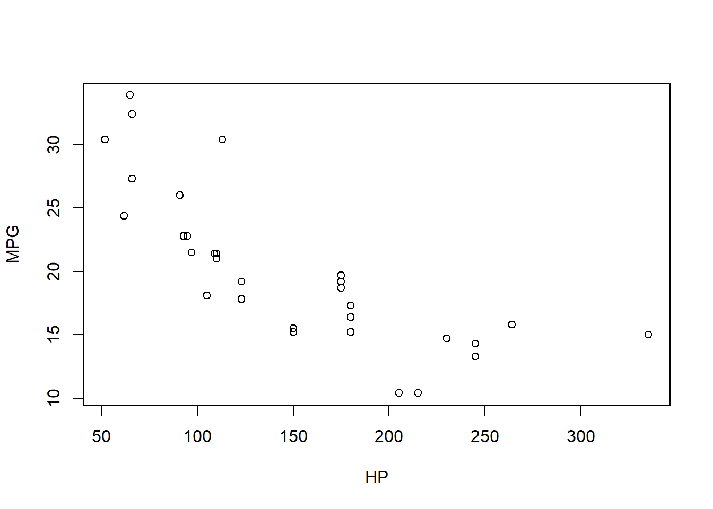
Correlación
La función cor nos ayuda a medir la correlación lineal que puede existir entre dos variables.
?cor## starting httpd help server ... donecor(x = mtcars$hp, y = mtcars$mpg, method = "pearson")## [1] -0.7761684El argumento method = "pearson" indica que estamos utilizando el coeficiente de correlación de Pearson, por mucho el más usado en la práctica.
Algunas reglas a considerar:
- Un valor cercano a 1 indica una correlación positiva fuerte.
- Un valor cercano a -1 indica una correlación negativa fuerte.
- Valores cercanos a 0 indican baja correlación.
Cuidado El coeficiente de correlación de Pearson sólo mide la relación lineal entre variables. Un valor cercano a cero del coeficiente de correlación no necesariamente indica baja correlación, pues la correlación de los datos puede ser no lineal. Para evitar malas conclusiones, siempre grafica tus datos.
La función cor puede analizar todas las variables que desees en un data frame al mismo tiempo
cor(mtcars[,c(1,2,3,4)], method = "pearson")## mpg cyl disp hp
## mpg 1.0000000 -0.8521620 -0.8475514 -0.7761684
## cyl -0.8521620 1.0000000 0.9020329 0.8324475
## disp -0.8475514 0.9020329 1.0000000 0.7909486
## hp -0.7761684 0.8324475 0.7909486 1.0000000Esta es una matriz de correlaciones.
Regresión
La función lm nos permite hacer un análisis de regresión y ajustar modelos lineales que no ayuden a predecir una variable de interés.
?lm
lm.mpg<-lm(mpg~hp, data = mtcars)
lm.mpg##
## Call:
## lm(formula = mpg ~ hp, data = mtcars)
##
## Coefficients:
## (Intercept) hp
## 30.09886 -0.06823La recta que ajustamos es \(mpg = 30.09886 - 0.06823 hp\).
Podemos usar esta recta para hacer predicciones. Pero primero, hay que verificar que el ajuste sea bueno.
Verificamos el ajuste de la regresión
Cuando trabajamos con una regresión lineal simple. Una forma intuitiva (existen otras más avanzadas) de evaluar el ajuste de la línea es graficándola junto a los datos.
x = mtcars$hp
y = mtcars$mpg
yhat = fitted(lm.mpg)
plot(x = x,y = y, pch = 19, xlab = "HP", ylab = "MPG")
points(sort(x), yhat[order(x)], type="l", col="red", lwd=2)Nota que el ajuste parece no ser muy bueno.
Mejoramos el ajuste
Transformamos la variable independiente x para mejorar el ajuste.
y = mtcars$mpg
x = mtcars$hp
trans.x <- log(x)
lm.mpg<-lm(y~trans.x)
plot(x,y, pch = 19, xlab = "HP", ylab = "MPG")
yhat = fitted(lm.mpg)
points(sort(x), yhat[order(x)], type="l", col="red", lwd=2)El ajuste se observa mucho mejor. Ahora podemos utilizar la ecuación para hacer predicciones con más confianza.
Pruebas de Hipótesis
Objetivos
A continuación se presentan algunas pruebas estadísticas usadas para analizar datos en R. El detalle del conocimiento de estos tópicos va más allá de la funcionalidad base de R o requiere de estudios previos en estadística.
Las pruebas a considerar se muestran a continuación:
- Prueba de Normalidad
- Prueba de Medias
- Prueba de varianza
- Prueba de proporciones
Prueba de Normalidad
Gráfico Cuantil-Cuantil
Un gráfico Cuantil-Cuantil permite observar cuan cerca está la distribución de un conjunto de datos a alguna distribución ideal ó comparar la distribución de dos conjuntos de datos.
Ejemplo: comparación con distribución normal
#generar 100 datos normales
x <- rnorm(100)#graficar sus cuantiles
qqnorm(x)
#graficar la recta con mejor ajuste
qqline(x)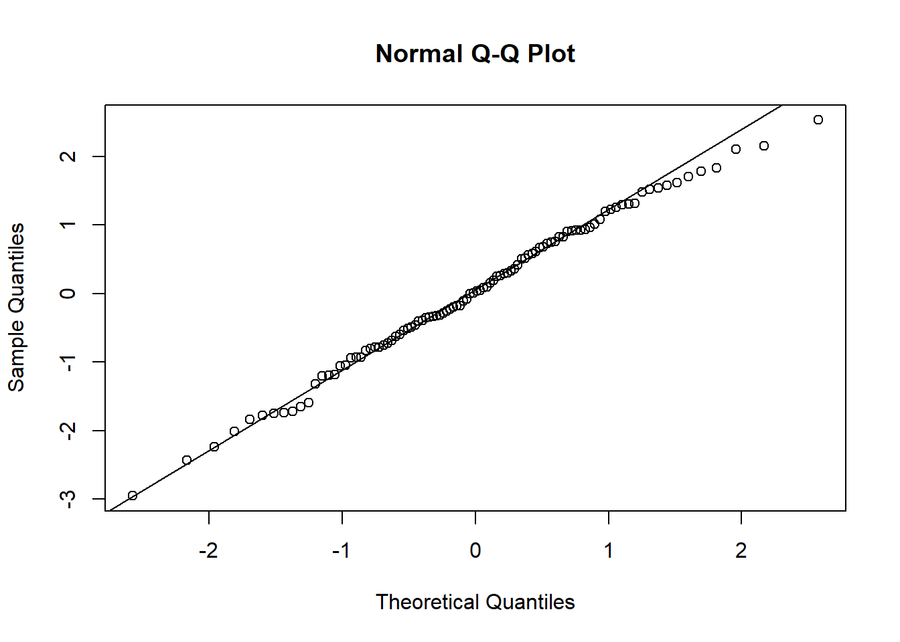
Comparar la distribución de dos conjuntos de datos
#primer conjunto de datos
x <- rnorm(100)
#segundo conjunto de datos
y <- rnorm(100)
qqplot(x,y)
qqline(x,y)## Warning in if (datax) {: la condición tiene longitud > 1 y sólo el primer
## elemento será usadoPrueba de Shaphiro-Wilks
Se utiliza para contrastar la normalidad de un conjunto de datos. Es una de las más utilizadas y eficientes para comprobar la normalidad de una variable.
Interpretación: Siendo la hipótesis nula que la población está distribuida normalmente, si el p-valor es menor a alfa (nivel de significancia) entonces la hipótesis nula es rechazada (se concluye que los datos no vienen de una distribución normal). Si el p-valor es mayor a alfa, se concluye que no se puede rechazar dicha hipótesis.
Ejemplo
# Creamos una variable normal con 100 valores
x <- rnorm(100)
x.test <- shapiro.test(x)
print(x.test)##
## Shapiro-Wilk normality test
##
## data: x
## W = 0.99299, p-value = 0.8876Como el valor de \(p > 0.05\), entonces podemos inferir que la distribución de los datos es una distribución normal.
Prueba de Medias
Prueba t de Student
Se utiliza para comprobar la igualdad de las medias de dos muestras o una muestra. También para comprobar si la media de una muestra es igual a una media teórica determinada. Los datos tienen que tener distribución normal (véase la prueba de Shapiro-Wilk).
Interpretación: Siendo la hipótesis nula que las medias de las muestras son iguales, si el \(p\)-valor es menor a alfa (nivel de significancia) entonces la hipótesis nula es rechazada (se concluye que los datos tienen diferentes medias). Si el \(p\)-valor es mayor a alfa, se concluye que no se puede rechazar dicha hipótesis.
Ejemplo: Comparación de dos muestras
x1 <- rnorm(100,10) # Variable aleatoria de media 10
x2 <- rnorm(100,10.5) # Variable aleatoria de media 10.5
test <- t.test(x1,x2) # Prueba t de Student
print(test)##
## Welch Two Sample t-test
##
## data: x1 and x2
## t = -4.4563, df = 195.42, p-value = 1.403e-05
## alternative hypothesis: true difference in means is not equal to 0
## 95 percent confidence interval:
## -0.8331228 -0.3219424
## sample estimates:
## mean of x mean of y
## 9.993251 10.570784Como el \(p\)-value es \(<0.05\) podemos afirmar que las muestras difieren en su media, es decir, los dos variables son diferentes.
ANOVA
Se usa para comparar las medias de dos o más grupos. Esta técnica puede generalizarse también para estudiar los posibles efectos de los factores sobre la varianza de una variable.
La hipótesis nula de la que parten los diferentes tipos de ANOVA es que la media de la variable estudiada es la misma en los diferentes grupos, en contraposición a la hipótesis alternativa de que al menos dos medias difieren de forma significativa. ANOVA permite comparar múltiples medias, pero lo hace mediante el estudio de las varianzas.
Ejemplo en formato .csv para realizar un análisis:
Subtype,Gender,Expression
A,m,-0.54
A,m,-0.8
A,m,-1.03
A,m,-0.41
B,f,-0.67
B,m,-0.77
B,f,-0.03
B,m,-0.12
C,m,1.67
C,m,0.81
C,f,-1.81
C,f,-1.18Análisis ANOVA de una cola:
a = aov(Expression~Subtype, data=x)
summary(a)## Df Sum Sq Mean Sq F value Pr(>F)
## Subtype 2 0.645 0.3223 0.333 0.725
## Residuals 9 8.702 0.9669Poner atencion en la formula, la variable dependiente Expression se encuentra antes de la variable independiente Subtype.
Análisis ANOVA de dos colas:
a = aov(Expression~Subtype*Gender, data=x)
summary(a)## Df Sum Sq Mean Sq F value Pr(>F)
## Subtype 2 0.645 0.322 1.86 0.22495
## Gender 1 3.485 3.485 20.11 0.00285 **
## Subtype:Gender 1 4.004 4.004 23.11 0.00195 **
## Residuals 7 1.213 0.173
## ---
## Signif. codes: 0 '***' 0.001 '**' 0.01 '*' 0.05 '.' 0.1 ' ' 1Aquí, la variable dependiente es Expression. Las variables Subtype and Age son independientes.
Prueba de Varianza
Prueba F
Se usa para comprobar la igualdad de varianzas entre dos grupos de datos. Nos puede ser útil en multitud de situaciones, por ejemplo, cuando tenemos dos máquinas que fabrian lo mismo (por ejemplo, rodamientos), y queremos saber si lo hacen con la misma variabilidad. Para poner un ejemplo, generemos datos de dos distribuciones normales con distinta varianza y veamos si el test detecta esta situación:
x <- rnorm(50, mean = 0, sd = 2)
y <- rnorm(30, mean = 1, sd = 1)
var.test(x, y)##
## F test to compare two variances
##
## data: x and y
## F = 3.8728, num df = 49, denom df = 29, p-value = 0.0002132
## alternative hypothesis: true ratio of variances is not equal to 1
## 95 percent confidence interval:
## 1.945802 7.286415
## sample estimates:
## ratio of variances
## 3.872835Como vemos, el \(p\)-valor sale prácticamente cero: rechazaremos la hipótesis de que los conjuntos de datos x e y provienen de distribuciones con la misma varianza.
Homogéneidad de Varianzas
Permite contrastar la igualdad de varianza en 2 o más poblaciones sin necesidad de que el tamaño de los grupos sea el mismo. Es sensible a la falta de normalidad, pero si se está seguro de que los datos provienen de una distribución normal, es la mejor opción.
Ejemplo:
data("iris")
a <- iris[iris$Species == "versicolor", "Petal.Length"]
b <- iris[iris$Species == "virginica", "Petal.Length"]
bartlett.test(list(a,b))##
## Bartlett test of homogeneity of variances
##
## data: list(a, b)
## Bartlett's K-squared = 1.249, df = 1, p-value = 0.2637Como el valor de \(p\) es mayor a 0.05, el test no encuentra diferencias significativas entre las varianzas de los dos grupos.
Prueba de Proporciones
Igualdad de Proporciones
Se usa para determinar si las proporciones en varios grupos son las mismas, o bien que dichas proporciones equivalen a unas determinadas.
Ejemplo: Para empezar, tiraremos una moneda al aire 100 veces, y nos preguntaremos si la proporción de caras puede ser considerada el 50%:
caras <- rbinom(1, size=100, pr = .5)
caras## [1] 60prop.test(caras,100)##
## 1-sample proportions test with continuity correction
##
## data: caras out of 100, null probability 0.5
## X-squared = 3.61, df = 1, p-value = 0.05743
## alternative hypothesis: true p is not equal to 0.5
## 95 percent confidence interval:
## 0.4970036 0.6952199
## sample estimates:
## p
## 0.6Como el \(p\)-valor es muy alto, 0.92, no rechazaremos la hipótesis nula de que \(p=0.5\).
Supongamos ahora que queremos saber si dos muestras han salido de la misma población.
Ejemplo: se quiere saber si las mujeres estudian un grupo de carreras diferentes en la misma proporcion. Para ello miramos la lista de matriculados en cuatro carreras y comprobamos si las proporciones de mujeres en las mismas coinciden:
estudiantes<-c(100,200,50,500)
names(estudiantes)<-c("quimica","derecho",
"matematicas","economia")
estudiantes## quimica derecho matematicas economia
## 100 200 50 500estudiantes.mujeres<-c(60,120,10,200)
prop.test(estudiantes.mujeres,estudiantes)##
## 4-sample test for equality of proportions without continuity
## correction
##
## data: estudiantes.mujeres out of estudiantes
## X-squared = 44.537, df = 3, p-value = 1.16e-09
## alternative hypothesis: two.sided
## sample estimates:
## prop 1 prop 2 prop 3 prop 4
## 0.6 0.6 0.2 0.4La conclusión es que no. Las mujeres, en este ejemplo, se matriculan de las carreras en distinta proporcion.